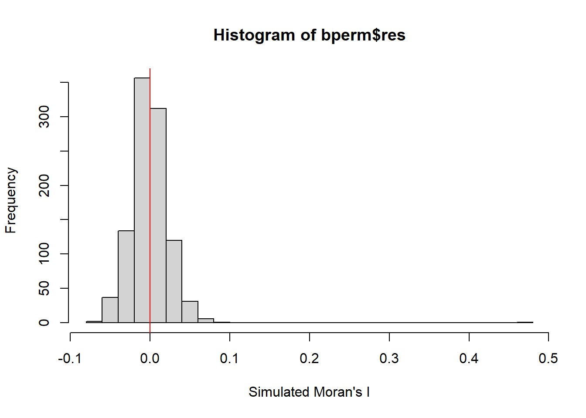
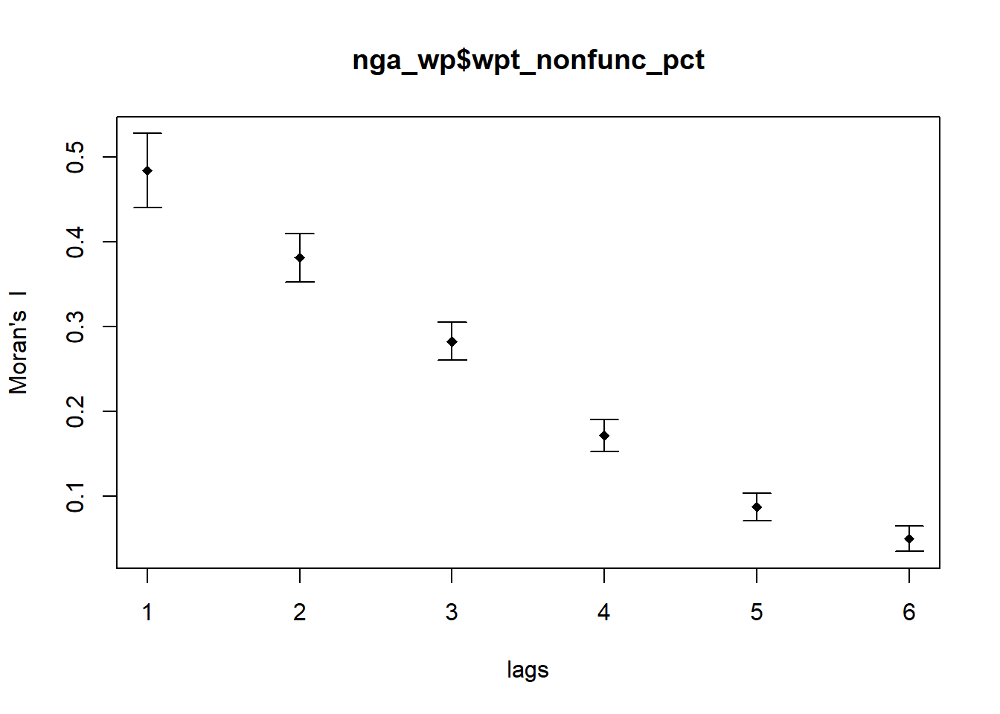
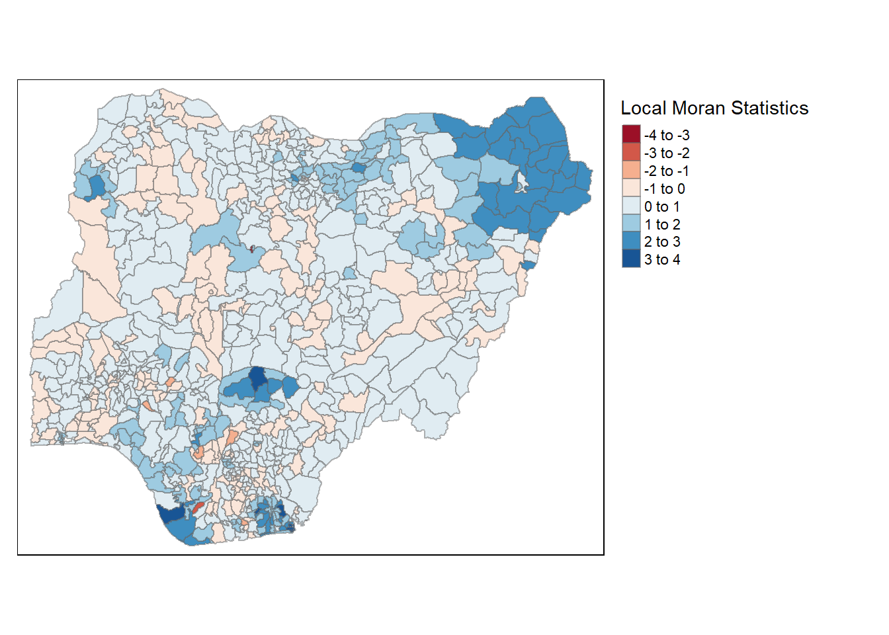
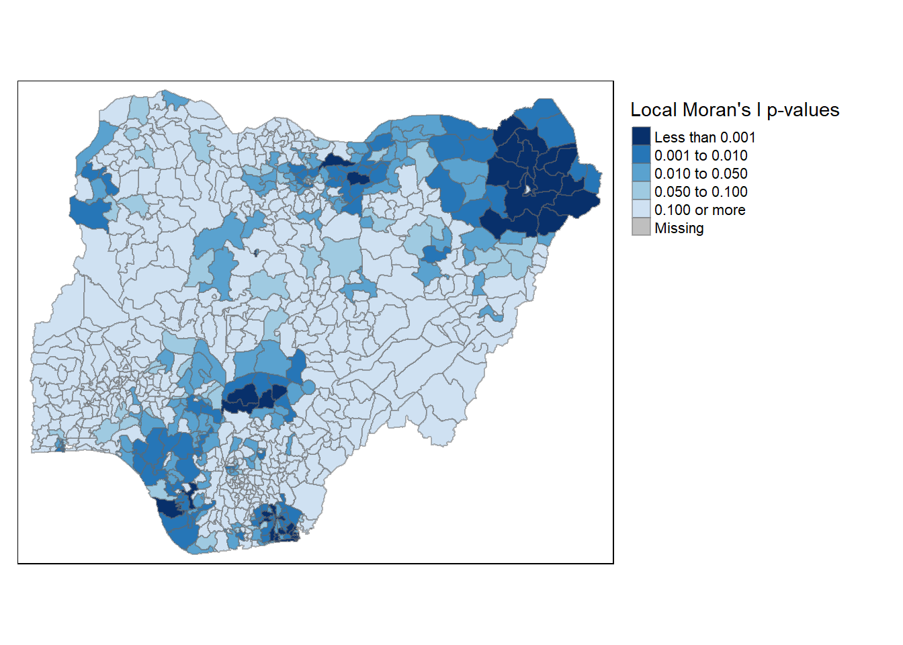

pacman::p_load(sf, spdep, tmap, tidyverse, stringr)Take-home Exercise 1: Geospatial Analytics for Social Good
Background
In Singapore, people are used to access clean water any where and any time. The convenience of getting clean water makes some people forget how precious clean water is, can how difficult it is for people living in other countries to use clean water.
Nigeria is one of the countries still facing severe water crisis, and about one third of the children there don’t have enough water to meet their daily needs.
In this take-home exercise, we are going to analyze the water point related data in Nigeria to reveal the spatial patterns of Not Functional water points.
Problem Statement
- Apply global measures of spatial association techniques to study if the Not Functional water points are evenly distributed across Nigeria
- Apply local measures of spatial association techniques to study if there are any area having more Not Functional water points
Getting Started
Data sources
- Aspatial Data
A set of a spatial data containing the water point related information is downloaded from Water Point Data Exchange (WPdx) website.
The original data set contains the data from 17 countries, and only the subset of Nigeria is used for the analysis in this exercise.
- Geospatial Data
Nigeria Level-2 Administrative Boundary polygon features GIS data downloaded from geoBoundaries will be used in this exercise.
Loading R Packages
First of all, let’s load the required R packages into R:
sf: importing, managing and processing geospatial data.
spdep: computing spatial weights and spatially lagged variables.
tmap: plotting Thematic Maps
tidyverse: importing, wrangling and visualizing data. It consists of a family of R packages, including readr, readxl, tidyr, dplyr and ggplot2.
stringr: transforming text data
Importing Data
Aspatial Data
Let’s import the aspatial data containing the water point information.
wp <- read_csv("Data/Water_Point_Data_Exchange-Plus_WPdx.csv")The data set contains 406,566 rows and 70 columns.
table(wp$`#clean_country_name`)
#| eval: false
length(table(wp$`#clean_country_name`))The aspatial data set contains data from 17 countries, and Nigeria consists of 95,008 rows.
Now, let’s get the subset of Nigeria.
wp <- subset(wp, `#clean_country_name` == "Nigeria")
#| eval: false
list(wp)The subset now contains only data for Nigeria, and it has 95,008 rows and 70 columns.
As we are interested to study the non-functional water points, let’s create a new column to indicate if the water points are functional or non-functional.
# Extract the first word from #status column
wp$status_n <- word(wp$`#status`, 1)
#| eval: false
unique(wp$status_n)Now let’s save the data set with the selected columns.
wp <- wp %>% select(c(`#lat_deg`,
`#lon_deg`,
`#clean_adm2`,
status_n,
`#water_source_category`,
`#water_tech_category`,
`#install_year`,
`#management_clean`,
`#subjective_quality`,
water_point_population,
local_population_1km,
crucialness_score
))write_csv(wp, "Data/Water_Point_Nigeria.csv")We could now clear the R environment to release unused memory.
Let’s import the data again for analysis.
wp <- read_csv("Data/Water_Point_Nigeria.csv")The data now contains 95,008 rows and the selected 12 columns.
Let’s take a look at some data in the wp data frame to check if the data is imported correctly.
list(wp)We could notice that latitude and longitude columns contains decimal values. Hence, it’s reasonable to assume they are in WGS 84 Geographic Coordinate System.
Now, let’s convert the data frame into a simple feature data frame.
wp_sf <- st_as_sf(wp,
coords = c("#lon_deg", "#lat_deg"),
crs = 4326)Let’s take a look at the new simple feature data frame.
glimpse(wp_sf)We have a new column, geometry, added into the simple feature data frame. The original latitude and longitude columns have been dropped.
Geospatial Data
Next, let’s import the geospatial data into R as a polygon feature data.
nga <- st_read(dsn = "Data/geoBoundaries-NGA-ADM2-all",
layer = "geoBoundaries-NGA-ADM2")Reading layer `geoBoundaries-NGA-ADM2' from data source
`D:\MITB_SunYP\ISSS624\Take-home_Ex1\Data\geoBoundaries-NGA-ADM2-all'
using driver `ESRI Shapefile'
Simple feature collection with 774 features and 5 fields
Geometry type: MULTIPOLYGON
Dimension: XY
Bounding box: xmin: 2.668534 ymin: 4.273007 xmax: 14.67882 ymax: 13.89442
Geodetic CRS: WGS 84We can see that this geospatial data is a multipolygon features object. It contains 774 multipolygon features and 5 fields. It is in WGS 84 coordinates system, and the bounding box provides the x and y extends of the data.
Now, let’s check if there are any duplicated polygons in the geospatial data.
n_occur <- data.frame(table(nga$shapeName))
n_occur[n_occur$Freq > 1,] Var1 Freq
94 Bassa 2
303 Ifelodun 2
353 Irepodun 2
516 Nasarawa 2
542 Obi 2
688 Surulere 2nga[nga$shapeName %in% n_occur$Var1[n_occur$Freq > 1], ]Simple feature collection with 12 features and 5 fields
Geometry type: MULTIPOLYGON
Dimension: XY
Bounding box: xmin: 3.316459 ymin: 6.459038 xmax: 9.020704 ymax: 12.05035
Geodetic CRS: WGS 84
First 10 features:
shapeName Level shapeID shapeGroup shapeType
94 Bassa ADM2 NGA-ADM2-72505758B95534398 NGA ADM2
95 Bassa ADM2 NGA-ADM2-72505758B52690633 NGA ADM2
304 Ifelodun ADM2 NGA-ADM2-72505758B26581542 NGA ADM2
305 Ifelodun ADM2 NGA-ADM2-72505758B18326272 NGA ADM2
355 Irepodun ADM2 NGA-ADM2-72505758B75034141 NGA ADM2
356 Irepodun ADM2 NGA-ADM2-72505758B79178637 NGA ADM2
519 Nasarawa ADM2 NGA-ADM2-72505758B6786568 NGA ADM2
520 Nasarawa ADM2 NGA-ADM2-72505758B67188591 NGA ADM2
546 Obi ADM2 NGA-ADM2-72505758B7318634 NGA ADM2
547 Obi ADM2 NGA-ADM2-72505758B3073896 NGA ADM2
geometry
94 MULTIPOLYGON (((6.708541 7....
95 MULTIPOLYGON (((8.823522 10...
304 MULTIPOLYGON (((4.664107 8....
305 MULTIPOLYGON (((4.721977 7....
355 MULTIPOLYGON (((5.05493 8.0...
356 MULTIPOLYGON (((4.543349 7....
519 MULTIPOLYGON (((8.554589 11...
520 MULTIPOLYGON (((7.493228 8....
546 MULTIPOLYGON (((8.191919 6....
547 MULTIPOLYGON (((9.008576 8....Indeed, the table above shows that there are 6 pairs of duplicated polygons. However, they have different geometry values which means they are not the same regions.
Let’s view those polygons with duplicated shapename in the map to validate our findings.
nga_new <- left_join(nga, n_occur, by = c("shapeName" = "Var1"))
tm_shape(nga_new) +
tm_polygons("Freq")
Indeed, those polygons are different although they have the same shapename. Let’s use label the polygons with shapeID which contains unique IDs for easy identification.
tm_shape(nga_new) +
tm_polygons() +
tm_shape(filter(nga_new, Freq == 2)) +
tm_polygons("shapeID") +
tm_legend(legend.outside=TRUE)Legend labels were too wide. The labels have been resized to 0.62, 0.62, 0.64, 0.62, 0.62, 0.64, 0.62, 0.64, 0.64, 0.62, 0.62, 0.62. Increase legend.width (argument of tm_layout) to make the legend wider and therefore the labels larger.
By referencing to cirad Aware webpage for Nigeria administrative boundaries (level 2) which is an interactive webpage to view geospatial data, we are able to identify the correct names for the polygons.
| shapeID | Original shapeName | Correct shapeName |
|---|---|---|
| NGA-ADM2-72505758B95534398 | Bassa | Bassa (Kogi) |
| NGA-ADM2-72505758B52690633 | Bassa | Bassa (Plateau) |
| NGA-ADM2-72505758B26581542 | Ifelodun | Ifelodun (Kwara) |
| NGA-ADM2-72505758B18326272 | Ifelodun | Ifelodun (Osun) |
| NGA-ADM2-72505758B75034141 | Irepodun | Irepodun (Kwara) |
| NGA-ADM2-72505758B79178637 | Irepodun | Irepodun (Osun) |
| NGA-ADM2-72505758B6786568 | Nasarawa | Nasarawa (Kano) |
| NGA-ADM2-72505758B67188591 | Nasarawa | Nasarawa (Nasarawa) |
| NGA-ADM2-72505758B7318634 | Obi | Obi (Benue) |
| NGA-ADM2-72505758B3073896 | Obi | Obi (Nasarawa) |
| NGA-ADM2-72505758B6675111 | Surulere | Surulere (Lagos) |
| NGA-ADM2-72505758B31597260 | Surulere | Surulere (Oyo) |
Now, let’s correct the shape names for the polygons with duplicated names.
nga_new$shapeName[nga_new$shapeID == "NGA-ADM2-72505758B95534398"] <- "Bassa (Kogi)"
nga_new$shapeName[nga_new$shapeID == "NGA-ADM2-72505758B52690633"] <- "Bassa (Plateau)"
nga_new$shapeName[nga_new$shapeID == "NGA-ADM2-72505758B26581542"] <- "Ifelodun (Kwara)"
nga_new$shapeName[nga_new$shapeID == "NGA-ADM2-72505758B18326272"] <- "Ifelodun (Osun)"
nga_new$shapeName[nga_new$shapeID == "NGA-ADM2-72505758B75034141"] <- "Irepodun (Kwara)"
nga_new$shapeName[nga_new$shapeID == "NGA-ADM2-72505758B79178637"] <- "Irepodun (Osun)"
nga_new$shapeName[nga_new$shapeID == "NGA-ADM2-72505758B6786568"] <- "Nasarawa (Kano)"
nga_new$shapeName[nga_new$shapeID == "NGA-ADM2-72505758B67188591"] <- "Nasarawa (Nasarawa)"
nga_new$shapeName[nga_new$shapeID == "NGA-ADM2-72505758B7318634"] <- "Obi (Benue)"
nga_new$shapeName[nga_new$shapeID == "NGA-ADM2-72505758B3073896"] <- "Obi (Nasarawa)"
nga_new$shapeName[nga_new$shapeID == "NGA-ADM2-72505758B6675111"] <- "Surulere (Lagos)"
nga_new$shapeName[nga_new$shapeID == "NGA-ADM2-72505758B31597260"] <- "Surulere (Oyo)"
nga_new <- nga_new[, 1:5]Let’s check if the shape names are unique now.
n_occur <- data.frame(table(nga_new$shapeName))
n_occur[n_occur$Freq > 1,][1] Var1 Freq
<0 rows> (or 0-length row.names)nga_new[nga_new$shapeName %in% n_occur$Var1[n_occur$Freq > 1], ]Simple feature collection with 0 features and 5 fields
Bounding box: xmin: NA ymin: NA xmax: NA ymax: NA
Geodetic CRS: WGS 84
[1] shapeName Level shapeID shapeGroup shapeType geometry
<0 rows> (or 0-length row.names)The report above shows that the shape names are unique now.
Extracting Information about Non-Functional Water Points
Since we know the status of all the water points, we are able to calculate the total number of water points in each region as well as the non-functional water points. However, the absolute counts might lead us to the biased analysis result because the chance of having more non-functional water points are higher for regions having more water points. Therefore, we’ll use the percentage of non-functional water points to understand the distribution.
Extracting Non-Functional Water Points
Let’s extract the data of non-functional water points.
wp_nonfunc <- wp_sf %>% filter(status_n == "Non-functional")Perform Point-in-Polygon Count
Let’s add the count of the total water points and the non-functional water points into the geospatial data.
nga_wp <- nga_new %>%
mutate(total_wpt = lengths(
st_intersects(nga_new, wp_sf)
)) %>%
mutate(wpt_nonfunc = lengths(
st_intersects(nga_new, wp_nonfunc)
))Let’s also calculate the percentage of non-functional water points.
nga_wp <- nga_wp %>%
mutate(wpt_nonfunc_pct = wpt_nonfunc / total_wpt)Saving the Analytical Data Table
Now we have prepared the analytical data table. Let’s save the simple feature data table into rds format.
write_rds(nga_wp, "Data/nga_wp.rds")We could now again clear the R environment and release the unused memory.
Visualizing the Spatial Distribution of Water Points
Let’s first import the analytical data back into R.
nga_wp <- read_rds("Data/nga_wp.rds")Visualizing Non-Functional Water Points
Let’s take a look at the distribution of the non-functional water points in Nigeria.
non_functional_count <- tm_shape(nga_wp) +
tm_fill("wpt_nonfunc",
style = "quantile",
title = "Count") +
tm_layout(main.title = "Distribution of Non-Function Water Points in Nigeria (Count)",
main.title.position = "center",
main.title.size = 0.8,
legend.height = 0.3,
legend.width = 0.2,
legend.title.size = 0.8,
legend.text.size = 0.4,
frame = TRUE) +
tm_borders(alpha = 0.5) +
tm_scale_bar() +
tm_grid(alpha = 0.2)
non_functional_pct <- tm_shape(nga_wp) +
tm_fill("wpt_nonfunc_pct",
style = "quantile",
title = "Percentage") +
tm_layout(main.title = "Distribution of Non-Function Water Points in Nigeria (%)",
main.title.position = "center",
main.title.size = 0.8,
legend.height = 0.3,
legend.width = 0.2,
legend.title.size = 0.8,
legend.text.size = 0.4,
frame = TRUE) +
tm_borders(alpha = 0.5) +
tm_scale_bar() +
tm_grid(alpha = 0.2)
tmap_arrange(non_functional_count, non_functional_pct, asp=1, ncol=2)The plot on the left shows that eastern, central and western Nigeria have higher number of non-functional water points. However, people from southern and north-western parts of Nigeria might be facing a more severe water crisis because the proportion of non-functional water points in those area is high.
The plots also tells us that the percentage of non-functional water points is a better indicator to understand the distribution of the non-functional water points.
Global Spatial Autocorrelation
In this section, we’ll test if the non-functional water points are evenly distributed across Nigeria by:
Calculating global spatial autocorrelation statistics
Conducting spatial complete randomness test
Computing contiguity spatial weights
We first need to cconstruct the spatial weights matrix to define the neighbourhood relationship among the regions. In this exercise, we will use Queen criteria to define the neighbours.
wm_q <- poly2nb(nga_wp, queen = TRUE)
summary(wm_q)Neighbour list object:
Number of regions: 774
Number of nonzero links: 4440
Percentage nonzero weights: 0.7411414
Average number of links: 5.736434
1 region with no links:
86
Link number distribution:
0 1 2 3 4 5 6 7 8 9 10 11 12 14
1 2 14 57 125 182 140 122 72 41 12 4 1 1
2 least connected regions:
138 560 with 1 link
1 most connected region:
508 with 14 linksThe summary report tells us that there are 774 regions in Nigeria, and there is one region without any neighbours. Among the rest of the regions, there are two least connected regions with 1 neighbour each, and 1 most connected region with 14 neighbours.
Row-standardized weights matrix
Next, we need to assign the weights to each neighbouring region. In this exercise, we assign equal weights to each neighbouring region.
rswm_q <- nb2listw(wm_q, style = "W", zero.policy = TRUE)
print(rswm_q, zero.policy = TRUE)Characteristics of weights list object:
Neighbour list object:
Number of regions: 774
Number of nonzero links: 4440
Percentage nonzero weights: 0.7411414
Average number of links: 5.736434
1 region with no links:
86
Weights style: W
Weights constants summary:
n nn S0 S1 S2
W 773 597529 773 285.0658 3198.414Global Spatial Autocorrelation: Moran’s I
Now, we are ready to conduct Moran’s I statistics test.
Null hypothesis: the non-functional water points are randomly disbursed
Alternative hypothesis: the non-functional water points are spatially clustered
Moran’s I test
moran.test(nga_wp$wpt_nonfunc_pct,
listw = rswm_q,
zero.policy = TRUE,
na.action = na.omit)
Moran I test under randomisation
data: nga_wp$wpt_nonfunc_pct
weights: rswm_q
omitted: 3, 86, 241, 250, 252, 261, 400, 406, 447, 473, 492, 507, 526
Moran I statistic standard deviate = 21.027, p-value < 2.2e-16
alternative hypothesis: greater
sample estimates:
Moran I statistic Expectation Variance
0.4628161249 -0.0013157895 0.0004872151 The p-value is less than 0.5, and we have enough evidence to reject the null hypothesis at 5% significance level. We are able to conclude that the non-functional water points are spatially clustered.
Computing Monte Carlo Moran’s I
To test is the Moran’s I statistic is significant, we’ll perform a permutation test with 1000 simulations.
set.seed(1234)
bperm = moran.mc(nga_wp$wpt_nonfunc_pct,
listw = rswm_q,
nsim = 999,
zero.policy = TRUE,
na.action = na.omit)
bperm
Monte-Carlo simulation of Moran I
data: nga_wp$wpt_nonfunc_pct
weights: rswm_q
omitted: 3, 86, 241, 250, 252, 261, 400, 406, 447, 473, 492, 507, 526
number of simulations + 1: 1000
statistic = 0.46221, observed rank = 1000, p-value = 0.001
alternative hypothesis: greaterThe p-value is less than 0.05, and we have enough evidence to reject the null hypothesis at 5% significance level. We could conclude that Moran’s I statistic is significant, and the non-functional water points are indeed spatially clustered.
Visualizing Monte Carlo Moran’s I
We could also plot the simulated Moran’s I statistics to analyze its significance.
summary(bperm$res[1:999]) Min. 1st Qu. Median Mean 3rd Qu. Max.
-0.079821 -0.015777 -0.001772 -0.001140 0.012762 0.084960 The summary report shows that the simulated Moran’s I statistic has a mean of -0.001140. The smallest Moran’s I statistic is -0.079821. and the largest is 0.084960.
var(bperm$res[1:999])[1] 0.0004987204Furthermore, the simulated Moran’s I statistic has a variance of 0.000499.
hist(bperm$res,
freq = TRUE,
breaks = 20,
xlab= "Simulated Moran's I")
abline(v = 0,
col = "red") 
The histogram above shows the distribution of Moran’s I values we could expect if the non-functional water points are randomly distributed across Nigeria. According to the Moran’s I test we performed earlier, the Moran’s I statistic is 0.463 which is far away to the right to the histogram. Hence, we could conclude that the Moran’s I statistic of 0.463 is significant, and the non-functional water points are spatially clustered.
Spatial Correlagram
Next, let’s check if the non-functional water points rates are correlated at different lags (i.e. distance) based on Moran’s I test.
Computing Moran’s I correlogram
Let’s compute a 6-lag spatial correlogram of non-functional water points. As NA is not allowed in sp.correlogram function, we’ll replace all the NA in wpt_nonfunc_pct variable to 0.
nga_wp <- nga_wp %>% mutate_at(vars(wpt_nonfunc_pct), ~replace_na(., 0))MI_corr <- sp.correlogram(wm_q,
nga_wp$wpt_nonfunc_pct,
order = 6,
method = "I",
style = "W",
zero.policy = TRUE)
plot(MI_corr)
Let’s also check the p values at each lag.
print(MI_corr)Spatial correlogram for nga_wp$wpt_nonfunc_pct
method: Moran's I
estimate expectation variance standard deviate Pr(I) two sided
1 (773) 4.8408e-01 -1.2953e-03 4.7375e-04 22.2997 < 2.2e-16
2 (773) 3.8123e-01 -1.2953e-03 2.0301e-04 26.8472 < 2.2e-16
3 (773) 2.8262e-01 -1.2953e-03 1.2246e-04 25.6559 < 2.2e-16
4 (773) 1.7152e-01 -1.2953e-03 8.8004e-05 18.4213 < 2.2e-16
5 (773) 8.7205e-02 -1.2953e-03 6.9105e-05 10.6461 < 2.2e-16
6 (773) 5.0029e-02 -1.2953e-03 5.7652e-05 6.7596 1.384e-11
1 (773) ***
2 (773) ***
3 (773) ***
4 (773) ***
5 (773) ***
6 (773) ***
---
Signif. codes: 0 '***' 0.001 '**' 0.01 '*' 0.05 '.' 0.1 ' ' 1The report shows that the p-values at all legs are less than 0.05, and we have enough evidence to conclude that the non-functional water points rates are significantly correlated among nearby neighbours at 5% significance level. This validates our conclusion from the previous section that the non-functional water points are spatially clustered.
Cluster and Outlier Analysis
We know by now that there are spatial clusters in terms of non-functional water point rates in Nigeria. Next, we need to to identify the clusters and find out if there are any outliers in terms of non-functional water point rates.
Computing local Moran’s I
Let’s compute the local Moran’s I statistic.
fips <- order(nga_wp$shapeName)
localMI <- localmoran(nga_wp$wpt_nonfunc_pct,
rswm_q,
zero.policy = TRUE,
na.action=na.omit)
head(localMI) Ii E.Ii Var.Ii Z.Ii Pr(z != E(Ii))
1 0.6189896 -0.0008766162 0.1688180 1.5086505 0.131388115
2 0.3608480 -0.0004372973 0.1124812 1.0772346 0.281375469
3 2.9224417 -0.0037806491 0.9692024 2.9723510 0.002955286
4 0.2754805 -0.0016933157 0.1854626 0.6436119 0.519827110
5 1.1323068 -0.0007913888 0.1217758 3.2470357 0.001166138
6 0.5221821 -0.0009284501 0.1017676 1.6397917 0.101048480Next, let’s list the local Moran’I statistic by each region.
printCoefmat(data.frame(
localMI[fips, ],
row.names = nga_wp$shapeName[fips]),
check.names = FALSE) Ii E.Ii Var.Ii Z.Ii
Aba North 6.1899e-01 -8.7662e-04 1.6882e-01 1.5087e+00
Aba South 3.6085e-01 -4.3730e-04 1.1248e-01 1.0772e+00
Abadam 2.9224e+00 -3.7806e-03 9.6920e-01 2.9724e+00
Abaji 2.7548e-01 -1.6933e-03 1.8546e-01 6.4361e-01
Abak 1.1323e+00 -7.9139e-04 1.2178e-01 3.2470e+00
Abakaliki 5.2218e-01 -9.2845e-04 1.0177e-01 1.6398e+00
Abeokuta North -2.0482e-01 -2.0809e-04 2.6664e-02 -1.2530e+00
Abeokuta South 1.1582e-01 -1.8963e-04 3.6544e-02 6.0684e-01
Abi -3.5767e-02 -5.7252e-05 8.8162e-03 -3.8031e-01
Aboh-Mbaise 1.1380e-02 -3.9656e-05 4.3505e-03 1.7313e-01
Abua/Odual 2.4503e-04 -1.7066e-05 1.8723e-03 6.0573e-03
Abuja Municipal 1.0762e-01 -9.9585e-04 9.5380e-02 3.5169e-01
Adavi 7.5291e-01 -1.1632e-03 1.7893e-01 1.7827e+00
Ado -2.1340e-02 -2.0843e-04 1.9979e-02 -1.4950e-01
Ado-Odo/Ota -1.0901e-01 -1.1454e-04 1.2565e-02 -9.7143e-01
Ado Ekiti -3.6075e-02 -1.6482e-04 2.5377e-02 -2.2542e-01
Afijio 1.2820e-02 -2.0323e-06 5.2298e-04 5.6069e-01
Afikpo North 1.0775e-02 -9.4972e-05 1.4624e-02 8.9889e-02
Afikpo South 5.8345e-02 -6.0255e-04 7.7179e-02 2.1219e-01
Agaie -6.1870e-02 -5.5799e-04 8.5881e-02 -2.0922e-01
Agatu 1.9712e+00 -2.8329e-03 4.3502e-01 2.9929e+00
Agege 1.0813e+00 -2.5016e-03 6.4213e-01 1.3525e+00
Aguata 7.7235e-01 -1.1778e-03 1.8116e-01 1.8174e+00
Agwara 1.7977e-01 -1.0163e-04 1.9586e-02 1.2852e+00
Ahiazu-Mbaise 7.9989e-02 -1.4229e-04 1.5609e-02 6.4138e-01
Ahoada East -5.5026e-01 -8.4535e-04 1.6280e-01 -1.3617e+00
Ahoada West -4.8586e-01 -3.7806e-03 5.8001e-01 -6.3300e-01
Aiyedade -3.1513e-03 -4.0665e-05 4.4612e-03 -4.6572e-02
Aiyedire 3.6898e-02 -2.9616e-05 3.2491e-03 6.4785e-01
Aiyekire (Gbonyin) 7.8197e-03 -2.1414e-06 2.0530e-04 5.4590e-01
Ajaokuta 9.1967e-01 -1.7434e-03 2.2305e-01 1.9510e+00
Ajeromi-Ifelodun 1.3713e+00 -1.5983e-03 4.1063e-01 2.1425e+00
Ajingi 1.0175e+00 -8.9818e-04 1.1501e-01 3.0028e+00
Akamkpa 4.9811e-02 -1.0307e-05 1.1308e-03 1.4815e+00
Akinyele 2.9814e-02 -8.1189e-06 8.9074e-04 9.9921e-01
Akko 7.3147e-01 -1.2759e-03 1.2217e-01 2.0964e+00
Akoko-Edo 7.0085e-01 -7.4650e-04 5.1807e-02 3.0824e+00
Akoko North East 5.3616e-01 -8.6871e-04 9.5226e-02 1.7403e+00
Akoko North West -1.0078e-02 -1.6547e-03 3.1842e-01 -1.4928e-02
Akoko South East 1.5956e+00 -3.0726e-03 5.9041e-01 2.0806e+00
Akoko South West 7.7873e-01 -1.0274e-03 1.5806e-01 1.9614e+00
Akpabuyo 4.5342e-01 -8.5567e-04 1.6479e-01 1.1191e+00
Akuku Toru -7.6072e-02 -1.5190e-04 3.9083e-02 -3.8403e-01
Akure North 1.7532e-01 -1.3958e-03 1.7864e-01 4.1811e-01
Akure South -1.0788e+00 -1.4857e-03 3.8175e-01 -1.7437e+00
Akwanga -2.5160e-01 -4.5530e-04 8.7719e-02 -8.4798e-01
Albasu 2.9885e-01 -9.2755e-05 1.4283e-02 2.5014e+00
Aleiro 7.1899e-02 -1.1273e-04 2.1727e-02 4.8854e-01
Alimosho 4.6979e-01 -5.1614e-04 5.6597e-02 1.9769e+00
Alkaleri -3.5057e-02 -1.2770e-04 1.2242e-02 -3.1569e-01
Amuwo-Odofin 7.8544e-01 -7.3297e-04 7.0220e-02 2.9668e+00
Anambra East 2.1589e-01 -4.6601e-04 5.9698e-02 8.8550e-01
Anambra West -3.0110e-02 -5.3546e-05 5.1333e-03 -4.1950e-01
Anaocha 7.3139e-01 -8.1155e-04 8.8964e-02 2.4548e+00
Andoni -4.3156e-01 -2.4851e-03 6.3791e-01 -5.3722e-01
Aninri 8.5136e-01 -3.7806e-03 5.8001e-01 1.1228e+00
Aniocha North -5.8900e-01 -2.8329e-03 5.4449e-01 -7.9437e-01
Aniocha South -2.9009e-01 -4.7433e-04 5.2015e-02 -1.2699e+00
Anka 8.7116e-02 -4.0767e-04 6.2754e-02 3.4939e-01
Ankpa 2.7900e+00 -4.7827e-03 5.2221e-01 3.8675e+00
Apa 2.2555e+00 -1.9714e-03 3.0300e-01 4.1011e+00
Apapa 1.8752e+00 -3.7806e-03 4.8271e-01 2.7045e+00
Ardo-Kola -1.3143e-02 -4.6914e-05 6.0124e-03 -1.6890e-01
Arewa-Dandi 1.0172e-02 -2.0922e-07 2.0058e-05 2.2712e+00
Argungu 8.3147e-02 -3.2145e-04 4.9486e-02 3.7522e-01
Arochukwu -2.3900e-01 -1.7710e-04 2.2694e-02 -1.5853e+00
Asa -4.1493e-02 -1.1223e-04 1.2311e-02 -3.7295e-01
Asari-Toru 3.4523e-01 -1.5619e-03 6.0273e-01 4.4669e-01
Askira/Uba 4.3727e-01 -7.8565e-04 6.6813e-02 1.6947e+00
Atakumosa East 1.1913e-01 -9.0262e-05 1.3899e-02 1.0113e+00
Atakumosa West 9.9991e-02 -1.1146e-04 9.4855e-03 1.0278e+00
Atiba 1.4890e-01 -2.8675e-04 2.7484e-02 8.9991e-01
Atigbo -2.4733e-01 -2.8444e-04 3.6445e-02 -1.2941e+00
Augie 2.5138e-01 -2.4206e-04 3.1016e-02 1.4288e+00
Auyo 1.3434e+00 -1.9498e-03 2.1350e-01 2.9116e+00
Awe 1.0541e-01 -1.5677e-04 1.5027e-02 8.6119e-01
Awgu 1.7746e-01 -7.2984e-05 9.3533e-03 1.8357e+00
Awka North 2.2509e-01 -3.7806e-03 4.1321e-01 3.5604e-01
Awka South 3.9881e-01 -5.1855e-04 7.9815e-02 1.4135e+00
Ayamelum -1.0037e+00 -1.4124e-03 2.1720e-01 -2.1506e+00
Babura 3.8879e-01 -1.1667e-03 1.7945e-01 9.2054e-01
Badagry 1.0576e-01 -4.5239e-04 1.1636e-01 3.1138e-01
Bade 8.0049e-01 -7.6878e-04 1.4807e-01 2.0823e+00
Bagudo -1.6322e-01 -2.1977e-05 3.3843e-03 -2.8052e+00
Bagwai 8.2852e-01 -1.0233e-03 1.1216e-01 2.4770e+00
Bakassi 0.0000e+00 0.0000e+00 0.0000e+00 NaN
Bakori 6.8880e-01 -2.2268e-03 2.8476e-01 1.2950e+00
Bakura 1.7292e-01 -2.1201e-03 2.7115e-01 3.3616e-01
Balanga -9.2463e-02 -2.0974e-04 2.3007e-02 -6.0821e-01
Bali 3.1172e-02 -1.1369e-04 9.6752e-03 3.1807e-01
Bama 2.9224e+00 -3.7806e-03 7.2596e-01 3.4344e+00
Barikin Ladi 1.3592e-03 -2.3503e-06 3.0122e-04 7.8447e-02
Baruten 2.5388e-02 -1.4095e-04 1.8063e-02 1.8995e-01
Bassa (Kogi) 1.1090e+00 -1.5657e-03 1.4987e-01 2.8688e+00
Bassa (Plateau) 2.0397e-01 -3.3320e-04 4.2691e-02 9.8879e-01
Batagarawa -2.0068e-02 -3.0263e-05 3.3202e-03 -3.4775e-01
Batsari 3.7413e-02 -3.0969e-05 4.7690e-03 5.4221e-01
Bauchi 3.7840e-01 -6.7409e-04 1.0374e-01 1.1769e+00
Baure -1.1705e-01 -2.6405e-05 4.0662e-03 -1.8352e+00
Bayo 1.3387e-01 -1.2770e-04 1.9663e-02 9.5556e-01
Bebeji 5.6543e-01 -1.8149e-03 2.7898e-01 1.0739e+00
Bekwara -5.0176e-02 -9.3749e-05 1.4436e-02 -4.1683e-01
Bende -1.0030e-01 -3.4114e-04 3.2695e-02 -5.5280e-01
Biase 1.3094e-01 -2.1596e-04 2.0701e-02 9.1162e-01
Bichi 2.6730e-01 -7.2984e-05 9.3533e-03 2.7646e+00
Bida -2.7422e-01 -1.6054e-03 6.1950e-01 -3.4636e-01
Billiri 1.3346e-01 -8.2046e-04 1.5801e-01 3.3780e-01
Bindawa 4.3943e-01 -7.7481e-04 9.9226e-02 1.3975e+00
Binji 6.1984e-01 -2.1828e-03 2.7915e-01 1.1773e+00
Biriniwa 1.0725e+00 -1.0523e-03 1.3473e-01 2.9249e+00
Birni Kudu 1.1721e+00 -1.8567e-03 1.7768e-01 2.7850e+00
Birnin-Gwari 1.0847e+00 -3.4885e-03 2.6593e-01 2.1101e+00
Birnin Kebbi -6.1679e-01 -1.4857e-03 1.9013e-01 -1.4111e+00
Birnin Magaji 3.7549e-01 -5.8735e-04 7.5233e-02 1.3711e+00
Biu 1.2619e+00 -3.7806e-03 3.6109e-01 2.1062e+00
Bodinga 3.3366e-01 -4.4248e-04 6.8111e-02 1.2802e+00
Bogoro 5.0769e-01 -6.4558e-04 1.6602e-01 1.2476e+00
Boki 1.9954e-04 -1.1865e-09 1.8272e-07 4.6681e-01
Bokkos -4.0479e-02 -3.4114e-04 4.3707e-02 -1.9199e-01
Boluwaduro 4.8942e-02 -4.2769e-05 8.2433e-03 5.3953e-01
Bomadi 2.8040e+00 -4.5649e-03 6.9977e-01 3.3575e+00
Bonny 3.2909e-01 -3.7806e-03 4.8271e-01 4.7910e-01
Borgu -2.8473e-01 -4.6900e-04 3.9898e-02 -1.4231e+00
Boripe 1.7316e-01 -3.6865e-04 4.7230e-02 7.9848e-01
Bosso -1.7520e-01 -5.7449e-04 7.3587e-02 -6.4373e-01
Brass 2.9100e+00 -4.0517e-03 1.5596e+00 2.3334e+00
Buji 7.9587e-01 -1.6035e-03 2.4654e-01 1.6061e+00
Bukkuyum -1.1608e-02 -1.8743e-04 2.8858e-02 -6.7231e-02
Bungudu 9.3154e-02 -5.4887e-05 7.0341e-03 1.1113e+00
Bunkure 3.3113e-01 -4.3435e-04 4.7633e-02 1.5192e+00
Bunza 1.2451e+00 -1.3459e-03 2.0699e-01 2.7398e+00
Bursari 8.9281e-01 -8.7361e-04 8.3682e-02 3.0894e+00
Buruku 2.3798e-02 -4.8289e-05 6.1887e-03 3.0313e-01
Burutu 6.5883e-01 -1.5022e-04 2.8950e-02 3.8730e+00
Bwari 2.2528e-01 -5.3309e-04 1.0270e-01 7.0466e-01
Calabar-Municipal -2.0207e-01 -4.8010e-05 1.2354e-02 -1.8176e+00
Calabar South 6.1826e-01 -2.6681e-03 5.1289e-01 8.6702e-01
Chanchaga -6.3191e-01 -1.1632e-03 8.9930e-01 -6.6512e-01
Charanchi 1.4817e-01 -3.4926e-04 4.4747e-02 7.0209e-01
Chibok 7.6936e-01 -3.9099e-04 1.0058e-01 2.4272e+00
Chikun 1.0977e+00 -1.2228e-02 1.1580e+00 1.0314e+00
Dala -1.3235e-01 -2.1132e-05 4.0732e-03 -2.0735e+00
Damaturu 1.4863e+00 -2.3282e-03 3.5770e-01 2.4891e+00
Damban -2.2109e-01 -2.0679e-03 2.6448e-01 -4.2587e-01
Dambatta 1.3602e-02 -2.0979e-07 3.2307e-05 2.3932e+00
Damboa 2.4758e+00 -3.7806e-03 3.6109e-01 4.1264e+00
Dan Musa 8.1327e-01 -1.8205e-03 1.9936e-01 1.8255e+00
Dandi 1.2156e+00 -3.5381e-03 6.7955e-01 1.4790e+00
Dandume 3.2692e-02 -8.1304e-06 1.5671e-03 8.2604e-01
Dange-Shuni -2.3479e-02 -3.0829e-05 3.3822e-03 -4.0320e-01
Danja -4.3605e-02 -2.2463e-04 2.8783e-02 -2.5570e-01
Darazo 1.2068e-01 -6.0255e-04 6.6067e-02 4.7187e-01
Dass 1.1043e+00 -2.3840e-03 9.1923e-01 1.1543e+00
Daura 3.0409e-01 -4.5039e-03 1.1538e+00 2.8730e-01
Dawakin Kudu 2.4893e-01 -2.2513e-04 2.8847e-02 1.4670e+00
Dawakin Tofa 1.7719e+00 -2.6895e-03 3.4378e-01 3.0266e+00
Degema 3.7781e-01 -3.4114e-04 3.2695e-02 2.0913e+00
Dekina 2.7151e+00 -3.1340e-03 6.0218e-01 3.5029e+00
Demsa 1.8760e-01 -4.7433e-04 5.2015e-02 8.2465e-01
Dikwa 2.9224e+00 -3.7806e-03 4.8271e-01 4.2118e+00
Doguwa -1.4032e-01 -7.9288e-05 1.0161e-02 -1.3913e+00
Doma 1.2540e-01 -2.4937e-05 2.1223e-03 2.7225e+00
Donga 8.3600e-02 -2.4683e-04 2.3659e-02 5.4512e-01
Dukku 1.4704e+00 -7.2721e-03 7.9204e-01 1.6604e+00
Dunukofia 6.2282e-03 -9.4458e-08 1.4546e-05 1.6330e+00
Dutse 1.6738e+00 -3.5108e-03 3.3541e-01 2.8961e+00
Dutsi -2.4159e-02 -1.1656e-05 1.2788e-03 -6.7524e-01
Dutsin-Ma 4.3495e-01 -5.8457e-04 7.4877e-02 1.5916e+00
Eastern Obolo 2.3619e+00 -6.8973e-03 1.0548e+00 2.3064e+00
Ebonyi 8.2004e-01 -1.2261e-03 1.5694e-01 2.0731e+00
Edati 2.0530e-02 -2.3699e-04 9.1573e-02 6.8628e-02
Ede North 1.1454e-01 -4.6900e-04 1.2063e-01 3.3114e-01
Ede South -3.2733e-02 -2.4098e-04 2.0505e-02 -2.2691e-01
Edu 3.4765e-01 -6.7035e-04 1.0316e-01 1.0845e+00
Efon 1.7991e-01 -7.0007e-04 1.3484e-01 4.9184e-01
Egbado North -8.3952e-02 -2.0002e-05 3.0801e-03 -1.5123e+00
Egbado South 3.8594e-01 -2.5738e-03 3.9534e-01 6.1790e-01
Egbeda -1.0412e-02 -1.3796e-06 2.1246e-04 -7.1421e-01
Egbedore -1.6606e-02 -9.1050e-05 8.7284e-03 -1.7677e-01
Egor 3.9639e-01 -7.7595e-04 1.9952e-01 8.8914e-01
Ehime-Mbano 2.8900e-01 -5.1603e-04 7.9427e-02 1.0273e+00
Ejigbo 7.9439e-02 -2.3903e-04 2.6218e-02 4.9208e-01
Ekeremor 3.5345e+00 -8.0504e-03 1.5392e+00 2.8554e+00
Eket 6.0520e-01 -2.8749e-04 5.5398e-02 2.5725e+00
Ekiti 8.7026e-01 -1.7292e-03 2.2124e-01 1.8539e+00
Ekiti East -1.0531e+00 -2.8987e-03 4.4510e-01 -1.5742e+00
Ekiti South West 2.4368e-01 -4.5627e-04 5.0035e-02 1.0914e+00
Ekiti West -9.3995e-03 -1.4155e-06 1.3571e-04 -8.0675e-01
Ekwusigo 1.2454e+00 -2.2229e-03 3.4157e-01 2.1347e+00
Eleme 1.1059e+00 -3.7806e-03 4.8271e-01 1.5972e+00
Emohua 5.0053e-02 -1.7066e-05 1.6361e-03 1.2379e+00
Emure -6.3036e-02 -1.9148e-04 2.9481e-02 -3.6601e-01
Enugu East 5.1819e-01 -9.9617e-04 1.5326e-01 1.3262e+00
Enugu North 1.4315e+00 -2.9504e-03 4.5301e-01 2.1312e+00
Enugu South 1.1145e+00 -2.7490e-03 7.0546e-01 1.3301e+00
Epe -1.1269e-01 -8.4068e-05 8.0591e-03 -1.2543e+00
Esan Central 1.2582e+00 -2.1211e-03 4.0797e-01 1.9733e+00
Esan North East 1.3634e+00 -1.5784e-03 2.4269e-01 2.7708e+00
Esan South East 1.1864e+00 -3.7722e-03 3.1984e-01 2.1045e+00
Esan West 8.4785e-01 -8.7662e-04 1.1225e-01 2.5332e+00
Ese-Odo 1.5782e+00 -2.2113e-03 3.3978e-01 2.7113e+00
Esit - Eket 2.5211e+00 -4.8759e-03 6.2187e-01 3.2031e+00
Essien Udim 2.1973e+00 -2.9391e-03 3.2151e-01 3.8804e+00
Etche -2.8299e-01 -4.0075e-04 4.3950e-02 -1.3479e+00
Ethiope East 6.6806e-01 -1.0477e-03 2.0173e-01 1.4897e+00
Ethiope West 1.4389e+00 -2.3655e-03 3.6342e-01 2.3907e+00
Eti-Osa 8.9627e-01 -3.7806e-03 5.8001e-01 1.1818e+00
Etim Ekpo 2.4231e+00 -2.4851e-03 3.1771e-01 4.3032e+00
Etinan 2.0980e+00 -5.0767e-03 7.7783e-01 2.3846e+00
Etsako Central 1.3454e+00 -1.8038e-03 2.7727e-01 2.5586e+00
Etsako East 9.4352e-01 -1.0719e-03 9.1134e-02 3.1290e+00
Etsako West -1.0750e-01 -1.7066e-05 1.8723e-03 -2.4840e+00
Etung 9.9337e-02 -6.2842e-04 1.6161e-01 2.4866e-01
Ewekoro 4.2616e-01 -9.2533e-04 1.1848e-01 1.2408e+00
Ezeagu 5.4151e-01 -7.6996e-04 1.1848e-01 1.5754e+00
Ezinihitte -2.8265e-02 -9.6525e-06 1.4865e-03 -7.3286e-01
Ezza North 4.9492e-01 -7.5359e-04 9.6511e-02 1.5955e+00
Ezza South 5.2553e-01 -8.1841e-04 1.2593e-01 1.4832e+00
Fagge 6.8403e-01 -2.5565e-03 3.9269e-01 1.0956e+00
Fakai -5.2165e-01 -9.1216e-04 9.9983e-02 -1.6468e+00
Faskari -2.3135e-02 -4.8779e-04 4.6743e-02 -1.0475e-01
Fika -5.4041e-02 -6.3818e-04 5.4280e-02 -2.2922e-01
Fufore 4.2035e-01 -3.7806e-03 4.8271e-01 6.1046e-01
Funakaye 1.0009e+00 -1.5239e-03 2.3432e-01 2.0709e+00
Fune 4.5668e-01 -2.3841e-04 2.2852e-02 3.0226e+00
Funtua 6.3610e-02 -3.8805e-04 5.9736e-02 2.6185e-01
Gabasawa 1.4201e+00 -3.2477e-03 4.1489e-01 2.2098e+00
Gada -6.9792e-03 -5.8822e-08 1.1338e-05 -2.0727e+00
Gagarawa 1.0974e+00 -2.3743e-03 3.0358e-01 1.9960e+00
Gamawa 4.0211e-02 -1.9272e-05 2.4700e-03 8.0947e-01
Ganjuwa 1.4234e-01 -1.4531e-03 1.3911e-01 3.8554e-01
Ganye 2.9061e-04 -1.1708e-09 2.2567e-07 6.1176e-01
Garki 8.7491e-01 -7.2439e-04 6.9399e-02 3.3239e+00
Garko 4.6262e-01 -1.6177e-03 1.7719e-01 1.1029e+00
Garum Mallam 3.2157e-01 -2.5905e-04 3.9882e-02 1.6115e+00
Gashaka 7.7531e-03 -2.7609e-05 5.3215e-03 1.0666e-01
Gassol 5.5535e-03 -3.6500e-05 4.6778e-03 8.1732e-02
Gaya 1.3202e+00 -3.4605e-03 6.6470e-01 1.6235e+00
Gbako -6.5856e-02 -1.2708e-04 1.9568e-02 -4.6987e-01
Gboko 7.4971e-03 -5.6321e-06 8.6733e-04 2.5476e-01
Geidam 2.1773e+00 -3.7806e-03 4.8271e-01 3.1393e+00
Gezawa 1.3411e-01 -3.0800e-05 4.7430e-03 1.9478e+00
Giade 1.9790e-01 -1.6887e-04 3.2545e-02 1.0979e+00
Girei 6.6862e-01 -1.4857e-03 2.2845e-01 1.4020e+00
Giwa 6.9331e-01 -9.3326e-04 7.9354e-02 2.4645e+00
Gokana -2.7791e-01 -6.0255e-04 1.1607e-01 -8.1396e-01
Gombe 1.1514e+00 -1.1819e-03 4.5628e-01 1.7063e+00
Gombi 6.4225e-03 -9.4458e-08 1.2106e-05 1.8459e+00
Goronyo -8.9661e-02 -2.4136e-03 3.0859e-01 -1.5706e-01
Gubio 2.5590e+00 -3.7806e-03 5.8001e-01 3.3650e+00
Gudu 9.2566e-01 -1.4027e-03 3.6044e-01 1.5442e+00
Gujba 1.6898e+00 -3.7806e-03 4.1321e-01 2.6346e+00
Gulani -1.1828e-01 -6.0255e-04 6.6067e-02 -4.5783e-01
Guma 2.3373e-01 -7.9657e-04 6.7741e-02 9.0109e-01
Gumel -9.9981e-02 -1.3367e-05 3.4398e-03 -1.7045e+00
Gummi -3.4644e-02 -5.7083e-05 6.2623e-03 -4.3706e-01
Gurara -7.5850e-02 -1.7488e-04 1.9183e-02 -5.4638e-01
Guri 1.3871e+00 -2.6994e-03 2.9535e-01 2.5572e+00
Gusau 2.2766e-02 -5.4695e-06 5.2437e-04 9.9443e-01
Guyuk -4.4355e-01 -6.0255e-04 1.1607e-01 -1.3002e+00
Guzamala 2.9224e+00 -3.7806e-03 4.8271e-01 4.2118e+00
Gwadabawa 2.7569e-01 -2.3996e-04 3.0747e-02 1.5736e+00
Gwagwalada 1.4105e-01 -1.6593e-04 2.1262e-02 9.6844e-01
Gwale 5.4504e-01 -8.7446e-04 1.6840e-01 1.3303e+00
Gwandu 8.6620e-02 -3.7170e-04 7.1618e-02 3.2506e-01
Gwaram 7.2564e-01 -1.7333e-03 1.6589e-01 1.7859e+00
Gwarzo 6.6298e-01 -1.6901e-03 2.1624e-01 1.4293e+00
Gwer East 2.2706e-01 -1.9067e-03 1.6197e-01 5.6893e-01
Gwer West 2.0705e+00 -7.3959e-03 9.4089e-01 2.1421e+00
Gwiwa 9.9615e-02 -7.5240e-05 9.6424e-03 1.0152e+00
Gwoza 2.9224e+00 -3.7806e-03 7.2596e-01 3.4344e+00
Hadejia -4.3259e-01 -1.9024e-04 4.8945e-02 -1.9545e+00
Hawul 1.2192e+00 -2.5738e-03 3.9534e-01 1.9431e+00
Hong -3.6492e-01 -3.4114e-04 4.3707e-02 -1.7438e+00
Ibadan North 1.2396e-01 -1.6508e-03 2.5380e-01 2.4933e-01
Ibadan North East 3.4631e-03 -2.6842e-07 3.4402e-05 5.9048e-01
Ibadan North West 2.0159e-01 -1.4502e-04 2.2329e-02 1.3501e+00
Ibadan South East 1.5088e-01 -1.0764e-03 1.6559e-01 3.7343e-01
Ibadan South West 3.2844e-01 -4.5302e-04 8.7279e-02 1.1133e+00
Ibaji 1.2443e+00 -5.6483e-03 6.1618e-01 1.5923e+00
Ibarapa Central 3.5049e-02 -1.4874e-05 2.2905e-03 7.3264e-01
Ibarapa East 3.0672e-02 -5.9738e-06 7.6562e-04 1.1087e+00
Ibarapa North 7.4915e-02 -1.7066e-05 2.6280e-03 1.4617e+00
Ibeju/Lekki 9.2254e-02 -2.0815e-05 8.0447e-03 1.0288e+00
Ibeno 1.8099e+00 -1.7434e-03 2.6801e-01 3.4994e+00
Ibesikpo Asutan 1.2113e+00 -9.5603e-04 1.4709e-01 3.1608e+00
Ibi -2.8258e-02 -1.2378e-04 1.3579e-02 -2.4144e-01
Ibiono Ibom 1.1364e+00 -1.8579e-03 2.3767e-01 2.3349e+00
Idah 1.5650e+00 -1.8926e-03 4.8609e-01 2.2474e+00
Idanre 6.4114e-01 -8.7086e-04 7.4054e-02 2.3592e+00
Ideato North 3.0853e-01 -1.3620e-03 1.3040e-01 8.5815e-01
Ideato South 7.3530e-02 -2.7555e-04 5.3097e-02 3.2030e-01
Idemili North 8.2026e-01 -2.9663e-03 3.2447e-01 1.4452e+00
Idemili South 1.4474e+00 -2.4203e-03 3.0944e-01 2.6063e+00
Ido 1.7084e-01 -1.7006e-04 1.6301e-02 1.3394e+00
Ido-Osi -5.8061e-01 -2.5738e-03 3.9534e-01 -9.1933e-01
Ifako-Ijaye 1.9044e-01 -6.2285e-05 9.5912e-03 1.9452e+00
Ife Central 2.9143e-01 -1.7062e-03 3.2831e-01 5.1160e-01
Ife East 3.9910e-01 -7.6198e-04 1.4676e-01 1.0438e+00
Ife North 1.0598e-01 -1.9241e-04 2.1106e-02 7.3084e-01
Ife South 1.9118e-01 -8.2449e-05 1.0566e-02 1.8607e+00
Ifedayo 1.4992e-01 -1.0420e-04 1.3354e-02 1.2982e+00
Ifedore 6.3786e-01 -1.7434e-03 1.9094e-01 1.4637e+00
Ifelodun (Kwara) 2.2674e-01 -3.2779e-04 2.2759e-02 1.5052e+00
Ifelodun (Osun) 2.8075e-01 -1.7893e-03 4.5962e-01 4.1676e-01
Ifo 6.5832e-01 -1.6610e-03 1.4113e-01 1.7568e+00
Igabi 8.3787e-01 -4.2721e-03 3.6204e-01 1.3996e+00
Igalamela-Odolu 2.0751e-01 -1.0059e-03 8.5527e-02 7.1300e-01
Igbo-Etiti 2.1596e-01 -2.1198e-04 3.2637e-02 1.1966e+00
Igbo-Eze North 5.1596e-02 -2.4203e-03 3.7182e-01 8.8585e-02
Igbo-Eze South 9.1189e-01 -2.1441e-03 4.1239e-01 1.4234e+00
Igueben 2.2979e+00 -5.8014e-03 7.3923e-01 2.6794e+00
Ihiala 3.0684e-01 -5.4736e-04 6.0019e-02 1.2547e+00
Ihitte/Uboma 1.6995e-01 -3.9074e-04 6.0150e-02 6.9456e-01
Ijebu East -8.2424e-01 -2.5387e-03 2.1552e-01 -1.7700e+00
Ijebu North -4.4703e-02 -8.9545e-04 8.5772e-02 -1.4958e-01
Ijebu North East -1.5286e-01 -2.8559e-04 5.5031e-02 -6.5040e-01
Ijebu Ode 9.9278e-02 -1.9656e-04 3.7879e-02 5.1110e-01
Ijero -1.4662e-01 -4.1496e-04 6.3876e-02 -5.7849e-01
Ijumu 5.9617e-01 -6.0255e-04 5.7733e-02 2.4837e+00
Ika 3.3029e+00 -6.8043e-03 1.3026e+00 2.8999e+00
Ika North East -1.9006e+00 -3.7806e-03 5.8001e-01 -2.4906e+00
Ika South -1.7291e-02 -4.1856e-03 8.0338e-01 -1.4621e-02
Ikara 4.3218e-01 -1.6109e-03 1.7645e-01 1.0327e+00
Ikeduru -1.7452e-02 -1.7066e-05 2.6280e-03 -3.4009e-01
Ikeja 1.4716e+00 -2.8402e-03 2.7152e-01 2.8296e+00
Ikenne -1.9854e-02 -6.3818e-04 1.2293e-01 -5.4806e-02
Ikere 3.0092e-01 -1.1767e-03 1.8100e-01 7.1008e-01
Ikole 2.1088e-02 -3.0960e-06 3.3967e-04 1.1444e+00
Ikom 6.3636e-02 -1.4723e-04 1.8868e-02 4.6435e-01
Ikono 1.4030e+00 -1.5657e-03 1.7151e-01 3.3915e+00
Ikorodu 1.5552e-01 -2.6632e-04 4.1001e-02 7.6935e-01
Ikot Abasi 1.3769e+00 -1.3260e-03 2.0392e-01 3.0520e+00
Ikot Ekpene 2.2261e+00 -3.0987e-03 7.9491e-01 2.5003e+00
Ikpoba-Okha 8.6722e-01 -1.2233e-03 1.3404e-01 2.3720e+00
Ikwerre -2.7449e-02 -2.6070e-03 5.0118e-01 -3.5091e-02
Ikwo 2.1848e-01 -1.3000e-03 1.6640e-01 5.3878e-01
Ikwuano 9.9864e-02 -5.8702e-05 7.5231e-03 1.1520e+00
Ila 4.7380e-02 -1.7284e-05 1.8962e-03 1.0884e+00
Ilaje 9.7571e-01 -7.5700e-04 1.4580e-01 2.5573e+00
Ile-Oluji-Okeigbo 9.7811e-01 -2.6175e-03 4.0204e-01 1.5467e+00
Ilejemeji 1.7445e-01 -1.0719e-03 2.0639e-01 3.8635e-01
Ilesha East 4.4893e-02 -2.8724e-05 5.5363e-03 6.0374e-01
Ilesha West 1.0962e-01 -3.3629e-04 6.4798e-02 4.3195e-01
Illela 5.9819e-01 -1.3161e-03 3.3824e-01 1.0308e+00
Ilorin East -3.3645e-02 -5.2293e-05 1.0079e-02 -3.3461e-01
Ilorin South 2.8594e-03 -8.6443e-07 1.6662e-04 2.2159e-01
Ilorin West 1.4699e-03 -6.8470e-06 1.0544e-03 4.5479e-02
Imeko-Afon -3.2367e-02 -3.7806e-03 5.8001e-01 -3.7535e-02
Ingawa 5.8714e-01 -1.8695e-03 1.5881e-01 1.4780e+00
Ini 6.6850e-01 -1.8706e-03 2.3929e-01 1.3704e+00
Ipokia -1.8760e-02 -4.6157e-05 8.8962e-03 -1.9841e-01
Irele 1.8468e+00 -2.6263e-03 5.0488e-01 2.6029e+00
Irepo 6.4392e-03 -3.6910e-05 7.1140e-03 7.6782e-02
Irepodun (Kwara) 5.4095e-01 -1.5815e-03 2.0237e-01 1.2060e+00
Irepodun (Osun) 5.4222e-02 -6.4031e-05 1.6476e-02 4.2292e-01
Irepodun/Ifelodun -4.3832e-02 -2.4981e-04 2.3944e-02 -2.8165e-01
Irewole 3.8483e-02 -2.5667e-04 3.9517e-02 1.9488e-01
Isa -7.5904e-02 -1.0412e-03 1.3331e-01 -2.0504e-01
Ise/Orun -6.9365e-01 -3.2003e-03 4.0885e-01 -1.0798e+00
Iseyin 3.9054e-01 -1.7646e-03 1.6888e-01 9.5461e-01
Ishielu 2.6421e-02 -5.0650e-06 5.5568e-04 1.1210e+00
Isi-Uzo -9.4144e-01 -4.3666e-03 3.7002e-01 -1.5405e+00
Isiala-Ngwa North -1.3470e-02 -2.4127e-06 3.7154e-04 -6.9867e-01
Isiala-Ngwa South 4.2176e-01 -8.9545e-04 9.8153e-02 1.3491e+00
Isiala Mbano 9.6890e-02 -2.3996e-04 3.0747e-02 5.5393e-01
Isin 1.7121e-02 -4.6162e-07 1.1879e-04 1.5709e+00
Isiukwuato 1.4327e-02 -1.8316e-04 2.8201e-02 8.6404e-02
Isokan 8.4270e-02 -4.9848e-05 7.6761e-03 9.6240e-01
Isoko North 8.8863e-01 -1.9714e-03 3.7924e-01 1.4462e+00
Isoko South 1.1174e+00 -1.2462e-03 1.9167e-01 2.5552e+00
Isu -6.6828e-01 -2.2229e-03 4.2751e-01 -1.0187e+00
Itas/Gadau 3.0778e-01 -1.7839e-04 1.7099e-02 2.3551e+00
Itesiwaju 3.5248e-01 -1.9823e-03 3.8132e-01 5.7402e-01
Itu 2.5145e+00 -4.5649e-03 8.7585e-01 2.6917e+00
Ivo -6.2184e-02 -2.4937e-05 3.1960e-03 -1.0995e+00
Iwajowa 1.3885e-01 -5.6324e-05 7.2184e-03 1.6349e+00
Iwo 1.2012e-01 -2.6632e-04 4.1001e-02 5.9456e-01
Izzi 6.3985e-01 -2.1017e-03 3.2298e-01 1.1296e+00
Jaba 2.5637e-01 -1.6690e-03 2.5660e-01 5.0940e-01
Jada -2.5262e-01 -1.5022e-04 3.8650e-02 -1.2842e+00
Jahun 1.4901e+00 -1.3966e-03 1.7875e-01 3.5279e+00
Jakusko 8.5156e-01 -1.7491e-03 1.9156e-01 1.9496e+00
Jalingo -3.6708e-02 -1.1732e-04 3.0186e-02 -2.1060e-01
Jama'are 1.6730e-01 -1.2010e-04 2.3147e-02 1.1004e+00
Jega 2.9327e-01 -4.4348e-04 5.6814e-02 1.2323e+00
Jema'a 6.7164e-02 -9.0757e-04 1.1621e-01 1.9968e-01
Jere 9.1207e-01 -3.8424e-04 7.4033e-02 3.3535e+00
Jibia 5.4587e-03 -1.2442e-05 1.9160e-03 1.2499e-01
Jos East 1.5916e-01 -2.5972e-04 3.3278e-02 8.7389e-01
Jos North 2.1351e-01 -6.6305e-04 1.2772e-01 5.9929e-01
Jos South -1.6913e-01 -2.7975e-04 4.3068e-02 -8.1361e-01
Kabba/Bunu 7.2210e-01 -7.8863e-04 1.0099e-01 2.2747e+00
Kabo 6.2384e-01 -8.5406e-04 9.3621e-02 2.0417e+00
Kachia 1.0632e-01 -3.0472e-05 3.3431e-03 1.8393e+00
Kaduna North 1.3377e+00 -1.7933e-03 4.6064e-01 1.9736e+00
Kaduna South -3.0006e+00 -2.8461e-03 7.3030e-01 -3.5079e+00
Kafin Hausa 1.7764e+00 -3.6951e-03 4.7183e-01 2.5915e+00
Kafur 3.0119e-01 -7.0298e-04 9.0034e-02 1.0061e+00
Kaga 2.4331e+00 -3.7806e-03 5.8001e-01 3.1998e+00
Kagarko 1.9815e-01 -3.3138e-03 3.6236e-01 3.3468e-01
Kaiama -3.4618e-02 -4.9084e-05 6.2905e-03 -4.3585e-01
Kaita -1.8713e-02 -1.8676e-05 2.3936e-03 -3.8210e-01
Kajola 2.0159e-01 -6.9222e-05 1.7812e-02 1.5110e+00
Kajuru 2.1734e-01 -3.0770e-03 2.6107e-01 4.3138e-01
Kala/Balge 2.9224e+00 -3.7806e-03 9.6920e-01 2.9724e+00
Kalgo 4.3332e-01 -3.0100e-03 4.6214e-01 6.4185e-01
Kaltungo -2.8963e-01 -2.4343e-04 3.7479e-02 -1.4948e+00
Kanam 2.1431e-01 -2.8855e-04 3.1648e-02 1.2063e+00
Kankara 6.5569e-01 -8.3928e-04 9.2001e-02 2.1645e+00
Kanke 4.7581e-01 -7.4550e-04 1.1472e-01 1.4070e+00
Kankia 3.6796e-01 -2.8638e-04 3.1410e-02 2.0778e+00
Kano Municipal 5.2370e-01 -4.9188e-04 7.5711e-02 1.9051e+00
Karasuwa 7.9218e-01 -6.7919e-04 1.0452e-01 2.4524e+00
Karaye -2.0653e-01 -1.3465e-04 2.0733e-02 -1.4334e+00
Karim-Lamido -8.3729e-02 -2.2463e-04 1.7180e-02 -6.3709e-01
Karu 2.3969e-02 -1.8137e-06 1.5436e-04 1.9294e+00
Katagum 1.8329e-02 -3.6910e-05 4.0493e-03 2.8861e-01
Katcha -7.8280e-03 -2.6809e-06 4.1285e-04 -3.8513e-01
Katsina 1.7105e-03 -7.9949e-06 2.0573e-03 3.7887e-02
Katsina-Ala -5.4433e-02 -1.4198e-05 1.5577e-03 -1.3788e+00
Kaugama 1.6265e+00 -2.6839e-03 2.5662e-01 3.2161e+00
Kaura -1.6876e-01 -1.1052e-04 2.1301e-02 -1.1555e+00
Kaura Namoda 2.2994e-01 -7.3297e-04 1.4118e-01 6.1393e-01
Kauru -9.7683e-02 -7.6958e-05 1.1851e-02 -8.9662e-01
Kazaure 1.8945e-01 -1.6813e-04 1.8443e-02 1.3962e+00
Keana 5.8978e-01 -7.7835e-04 1.4991e-01 1.5253e+00
Kebbe 2.1571e-01 -2.7163e-04 3.4804e-02 1.1577e+00
Keffi -1.1899e-01 -6.6217e-04 2.5576e-01 -2.3398e-01
Khana 2.2749e-01 -1.2463e-04 1.0606e-02 2.2102e+00
Kibiya 3.7888e-01 -8.0463e-04 1.5497e-01 9.6450e-01
Kirfi 9.6391e-02 -1.8684e-04 2.8768e-02 5.6941e-01
Kiri Kasamma 7.1549e-01 -7.2924e-04 9.3395e-02 2.3436e+00
Kiru 3.0459e-01 -5.2114e-04 5.7146e-02 1.2763e+00
Kiyawa 1.0847e+00 -1.0764e-03 1.6559e-01 2.6683e+00
Kogi 3.2346e-01 -1.7434e-03 2.6801e-01 6.2817e-01
Koko/Besse 1.0138e+00 -2.8743e-03 3.6732e-01 1.6776e+00
Kokona 1.2271e-02 -1.1273e-04 1.0807e-02 1.1913e-01
Kolokuma/Opokuma -2.1548e+00 -2.7967e-03 7.1766e-01 -2.5403e+00
Konduga 2.5170e+00 -3.7806e-03 2.8812e-01 4.6963e+00
Konshisha -2.7488e-02 -4.0077e-04 4.3951e-02 -1.2921e-01
Kontagora 1.0053e-01 -1.9063e-05 4.9054e-03 1.4356e+00
Kosofe 1.1396e+00 -1.9085e-03 3.6717e-01 1.8839e+00
Kubau 5.5930e-01 -2.2911e-03 3.5201e-01 9.4656e-01
Kudan 5.2374e-02 -1.2759e-03 1.6332e-01 1.3275e-01
Kuje 4.2328e-01 -7.5928e-04 1.1684e-01 1.2405e+00
Kukawa 2.9224e+00 -3.7806e-03 9.6920e-01 2.9724e+00
Kumbotso 7.3965e-01 -9.6858e-04 7.4023e-02 2.7221e+00
Kunchi 9.2231e-01 -1.8205e-03 3.5026e-01 1.5615e+00
Kura 8.7866e-02 -2.5067e-05 4.8316e-03 1.2644e+00
Kurfi 5.8636e-02 -2.1977e-05 3.3843e-03 1.0083e+00
Kurmi 9.1290e-02 -1.1026e-04 1.6978e-02 7.0146e-01
Kusada 1.1216e+00 -3.1839e-03 6.1174e-01 1.4381e+00
Kwali 1.9088e-01 -8.2449e-05 2.1215e-02 1.3111e+00
Kwami 1.6069e+00 -2.5939e-03 3.3159e-01 2.7950e+00
Kwande 1.6280e-01 -2.4275e-03 3.1036e-01 2.9659e-01
Kware -4.3812e-03 -2.4359e-06 2.3354e-04 -2.8653e-01
Kwaya Kusar 1.4770e-01 -1.7066e-05 3.2893e-03 2.5755e+00
Lafia -1.6424e-02 -3.2507e-06 3.1165e-04 -9.3018e-01
Lagelu -4.9007e-02 -7.5980e-05 8.3353e-03 -5.3595e-01
Lagos Island 4.0599e-01 -1.0674e-04 2.0573e-02 2.8313e+00
Lagos Mainland 1.4468e+00 -2.8402e-03 4.3614e-01 2.1950e+00
Lamurde -1.6107e-01 -3.7806e-03 4.8271e-01 -2.2638e-01
Langtang North 1.7745e-01 -3.5397e-04 3.8821e-02 9.0242e-01
Langtang South -1.7842e-01 -2.3090e-04 4.4495e-02 -8.4474e-01
Lapai -2.6691e-01 -4.8910e-04 6.2654e-02 -1.0644e+00
Lau -2.0230e-01 -1.6422e-04 1.5742e-02 -1.6110e+00
Lavun -5.3287e-02 -8.9040e-06 1.7162e-03 -1.2861e+00
Lere -1.4457e-01 -4.5955e-05 7.0767e-03 -1.7181e+00
Logo 8.3530e-02 -9.8313e-05 1.5138e-02 6.7969e-01
Lokoja -2.7102e-01 -1.7390e-04 1.3301e-02 -2.3485e+00
Machina 8.5257e-01 -8.3715e-04 1.2881e-01 2.3778e+00
Madagali 2.0137e+00 -3.7806e-03 7.2596e-01 2.3679e+00
Madobi 8.1952e-01 -1.5111e-03 1.4465e-01 2.1587e+00
Mafa 2.5906e+00 -3.7806e-03 4.8271e-01 3.7342e+00
Magama 1.9288e-01 -2.0229e-04 2.5921e-02 1.1993e+00
Magumeri 1.0097e+00 -5.4055e-04 5.9273e-02 4.1495e+00
Mai'adua 1.4475e-01 -2.1336e-04 3.2849e-02 7.9982e-01
Maiduguri 1.7649e+00 -3.1710e-03 1.2217e+00 1.5996e+00
Maigatari 4.8182e-01 -3.6009e-04 5.5434e-02 2.0480e+00
Maiha -4.9324e-02 -4.4102e-04 8.4968e-02 -1.6770e-01
Maiyama 1.0366e+00 -9.8782e-04 1.2648e-01 2.9175e+00
Makoda 1.1457e+00 -3.3919e-03 3.7088e-01 1.8869e+00
Makurdi 2.4282e-01 -5.9509e-05 1.1469e-02 2.2679e+00
Malam Madori 1.1070e+00 -2.5565e-03 3.9269e-01 1.7706e+00
Malumfashi 8.6314e-01 -9.6203e-04 1.4801e-01 2.2461e+00
Mangu 9.2528e-02 -5.7452e-05 7.3628e-03 1.0790e+00
Mani -4.0034e-02 -3.7865e-05 4.8527e-03 -5.7414e-01
Maradun 1.5611e-01 -9.0406e-05 7.6936e-03 1.7808e+00
Mariga 3.4990e-01 -6.7626e-04 5.7517e-02 1.4618e+00
Markafi -5.0561e-02 -3.4185e-03 6.5666e-01 -5.8176e-02
Marte 2.9224e+00 -3.7806e-03 7.2596e-01 3.4344e+00
Maru -3.5280e-02 -1.2100e-04 1.0297e-02 -3.4649e-01
Mashegu 1.8892e-01 -2.4136e-03 2.3084e-01 3.9824e-01
Mashi 5.4684e-02 -4.7202e-04 9.0939e-02 1.8290e-01
Matazu 4.3344e-01 -3.4943e-04 6.7328e-02 1.6718e+00
Mayo-Belwa 9.5773e-02 -3.4114e-04 2.9024e-02 5.6417e-01
Mbaitoli -1.0080e-01 -4.3332e-04 3.6864e-02 -5.2273e-01
Mbo 3.4947e+00 -5.4330e-03 1.0415e+00 3.4297e+00
Michika -1.0025e-01 -3.4114e-04 8.7757e-02 -3.3725e-01
Miga 2.1495e+00 -3.4573e-03 5.3057e-01 2.9557e+00
Mikang 1.0213e-01 -5.2445e-05 1.3495e-02 8.7964e-01
Minjibir 1.6295e+00 -3.5780e-03 3.9115e-01 2.6111e+00
Misau -1.6672e-02 -1.3396e-04 2.0627e-02 -1.1515e-01
Mkpat Enin 2.3165e+00 -2.7277e-03 3.4864e-01 3.9278e+00
Moba 1.3289e-01 -1.2018e-04 1.5401e-02 1.0718e+00
Mobbar 2.9224e+00 -3.7806e-03 5.8001e-01 3.8423e+00
Mokwa 3.0287e-02 -4.1403e-05 2.2503e-03 6.3933e-01
Monguno 2.9224e+00 -3.7806e-03 5.8001e-01 3.8423e+00
Mopa-Muro 1.5974e+00 -2.9767e-03 7.6371e-01 1.8313e+00
Moro 7.4012e-03 -5.8753e-06 5.0003e-04 3.3124e-01
Mubi North 9.7470e-01 -1.2228e-02 2.3281e+00 6.4682e-01
Mubi South 2.0261e+00 -1.2228e-02 3.1082e+00 1.1562e+00
Musawa 7.2808e-01 -1.3118e-03 1.2560e-01 2.0581e+00
Mushin 1.2691e+00 -1.1973e-03 1.8415e-01 2.9603e+00
Muya 3.0340e-01 -2.1272e-04 4.0993e-02 1.4995e+00
Nafada 7.2516e-01 -9.2173e-04 1.7750e-01 1.7234e+00
Nangere 1.7099e-01 -2.2447e-04 2.8762e-02 1.0096e+00
Nasarawa-Eggon 6.3801e-04 -2.3557e-04 4.5395e-02 4.1001e-03
Nasarawa (Kano) -5.7535e-01 -5.2104e-04 6.6744e-02 -2.2250e+00
Nasarawa (Nasarawa) 3.7952e-01 -2.8337e-04 2.7159e-02 2.3046e+00
Ndokwa East 4.0943e-01 -1.0114e-03 9.6869e-02 1.3187e+00
Ndokwa West 9.6522e-01 -1.5610e-03 1.7099e-01 2.3380e+00
Nembe 1.0017e+00 -2.1674e-03 3.3305e-01 1.7394e+00
Ngala 2.9224e+00 -3.7806e-03 9.6920e-01 2.9724e+00
Nganzai 2.3784e+00 -3.7806e-03 4.1321e-01 3.7059e+00
Ngaski 3.4305e-01 -4.9740e-04 6.3718e-02 1.3610e+00
Ngor-Okpala -8.4875e-03 -9.6858e-04 9.2771e-02 -2.4686e-02
Nguru 1.2933e+00 -2.1504e-03 3.3045e-01 2.2535e+00
Ningi 4.7396e-01 -8.8161e-04 8.4447e-02 1.6340e+00
Njaba -2.0831e-01 -3.5386e-04 5.4475e-02 -8.9099e-01
Njikoka -9.1686e-02 -1.8521e-05 2.3737e-03 -1.8815e+00
Nkanu East 5.7491e-01 -3.3990e-03 2.8830e-01 1.0771e+00
Nkanu West -5.7218e-01 -2.8641e-04 4.4094e-02 -2.7235e+00
Nkwerre -8.4809e-02 -1.0477e-03 1.3414e-01 -2.2870e-01
Nnewi North 1.1623e+00 -9.3655e-04 2.4078e-01 2.3707e+00
Nnewi South 1.2399e+00 -2.6070e-03 2.4929e-01 2.4885e+00
Nsit Atai 2.6987e+00 -4.9132e-03 9.4236e-01 2.7850e+00
Nsit Ibom 1.0011e+00 -8.8889e-04 1.7118e-01 2.4218e+00
Nsit Ubium 1.3174e+00 -1.3161e-03 1.2602e-01 3.7149e+00
Nsukka 2.8271e-01 -9.4621e-04 1.2116e-01 8.1492e-01
Numan 6.5904e-01 -3.7806e-03 7.2596e-01 7.7793e-01
Nwangele -1.6106e-01 -1.8475e-03 2.8399e-01 -2.9876e-01
Obafemi-Owode 2.1310e-01 -5.0089e-04 4.7998e-02 9.7495e-01
Obanliku 1.2691e-02 -8.3030e-07 2.1366e-04 8.6826e-01
Obi (Benue) -4.4264e-02 -1.3765e-04 2.6528e-02 -2.7092e-01
Obi (Nasarawa) 5.3645e-01 -4.0517e-03 7.7780e-01 6.1286e-01
Obi Ngwa 1.4861e+00 -2.4910e-03 2.1147e-01 3.2371e+00
Obia/Akpor 2.0138e-02 -8.4481e-07 9.2686e-05 2.0919e+00
Obokun 8.0879e-02 -1.0132e-04 8.6226e-03 8.7208e-01
Obot Akara 1.9004e+00 -3.7722e-03 4.1230e-01 2.9655e+00
Obowo 7.7800e-03 -1.3618e-05 2.0970e-03 1.7019e-01
Obubra -2.5637e-01 -5.4939e-04 6.0242e-02 -1.0423e+00
Obudu 2.8936e-02 -2.2546e-05 2.8896e-03 5.3872e-01
Odeda 3.5817e-02 -2.6484e-05 2.9055e-03 6.6496e-01
Odigbo 1.2245e+00 -5.1216e-03 5.5902e-01 1.6446e+00
Odo-Otin 7.5086e-02 -2.8116e-05 3.0846e-03 1.3524e+00
Odogbolu -4.6639e-02 -1.5190e-04 1.4561e-02 -3.8524e-01
Odukpani 7.4529e-01 -1.0416e-03 7.2269e-02 2.7762e+00
Offa 8.9283e-01 -1.2624e-03 9.7585e-01 9.0509e-01
Ofu 1.9504e+00 -3.0153e-03 3.2982e-01 3.4015e+00
Ogba/Egbema/Ndoni -2.3160e-01 -7.9431e-04 6.7549e-02 -8.8804e-01
Ogbadibo 7.1176e-02 -1.1533e-04 1.7758e-02 5.3499e-01
Ogbaru 2.3169e-01 -2.7555e-04 2.1073e-02 1.5979e+00
Ogbia 2.7158e-01 -4.0987e-04 6.3093e-02 1.0828e+00
Ogbomosho North -4.1042e-02 -1.7710e-04 4.5566e-02 -1.9144e-01
Ogbomosho South -7.6566e-02 -6.0255e-04 1.1607e-01 -2.2297e-01
Ogo Oluwa -9.5208e-03 -9.4972e-05 1.4624e-02 -7.7945e-02
Ogoja -1.7459e-02 -2.9070e-05 4.4766e-03 -2.6051e-01
Ogori/Magongo 5.4526e-01 -7.9139e-04 3.0563e-01 9.8772e-01
Ogu/Bolo 8.7787e-01 -3.7806e-03 5.8001e-01 1.1577e+00
Ogun waterside 1.0842e-01 -3.5343e-05 5.4425e-03 1.4702e+00
Oguta -6.2751e-01 -1.8315e-03 1.7527e-01 -1.4945e+00
Ohafia 3.5409e-02 -6.0255e-04 1.1607e-01 1.0570e-01
Ohaji/Egbema 7.6374e-02 -1.4852e-04 1.6291e-02 5.9952e-01
Ohaozara 2.2662e-01 -2.9112e-04 3.7300e-02 1.1749e+00
Ohaukwu 3.2124e-01 -4.4102e-04 8.4968e-02 1.1035e+00
Ohimini 1.3730e+00 -1.5293e-03 2.9432e-01 2.5337e+00
Oji-River 5.2037e-02 -6.8733e-06 6.5896e-04 2.0274e+00
Ojo -6.2067e-03 -3.2483e-06 6.2610e-04 -2.4792e-01
Oju 4.1864e-01 -1.8129e-03 1.9854e-01 9.4361e-01
Oke-Ero 7.6098e-01 -1.5940e-03 1.7460e-01 1.8250e+00
Okehi 9.9924e-01 -4.1057e-03 6.2968e-01 1.2644e+00
Okene 5.7894e-01 -5.2104e-04 8.0197e-02 2.0462e+00
Okigwe -1.8510e-01 -1.5394e-03 1.4736e-01 -4.7818e-01
Okitipupa 1.8891e+00 -3.6129e-03 5.5437e-01 2.5421e+00
Okobo 1.9879e+00 -2.5125e-03 2.7496e-01 3.7958e+00
Okpe 1.2993e-01 -2.2023e-05 2.4162e-03 2.6438e+00
Okpokwu 6.8966e-01 -8.3645e-04 1.0711e-01 2.1098e+00
Okrika 1.7856e+00 -2.2229e-03 3.4157e-01 3.0590e+00
Ola-oluwa 3.4991e-01 -2.0440e-03 3.9317e-01 5.6130e-01
Olamabolo 1.0384e+00 -2.5736e-03 2.8163e-01 1.9615e+00
Olorunda 1.5371e-02 -1.5774e-06 1.5123e-04 1.2500e+00
Olorunsogo 4.3710e-02 -5.7869e-05 6.3486e-03 5.4931e-01
Oluyole 5.4879e-02 -4.8215e-04 4.6203e-02 2.5755e-01
Omala 3.1409e+00 -7.6262e-03 9.6996e-01 3.1969e+00
Omumma -7.2924e-02 -4.0767e-04 7.8545e-02 -2.5875e-01
Ona-Ara -6.5377e-02 -6.7893e-04 8.6955e-02 -2.1940e-01
Ondo East 1.3603e+00 -2.4405e-03 3.7491e-01 2.2256e+00
Ondo West 9.7592e-01 -2.5736e-03 2.8163e-01 1.8438e+00
Onicha 3.3276e-01 -5.1053e-04 4.8921e-02 1.5068e+00
Onitsha North 5.4527e-01 -2.3282e-03 2.5483e-01 1.0848e+00
Onitsha South 3.0910e-01 -1.0764e-03 2.7670e-01 5.8966e-01
Onna 1.4310e+00 -1.3570e-03 1.7368e-01 3.4369e+00
Opobo/Nkoro 5.8335e-01 -2.7975e-04 5.3906e-02 2.5137e+00
Oredo 2.3950e-01 -1.7756e-04 4.5683e-02 1.1214e+00
Orelope -4.4118e-02 -4.8846e-05 7.5217e-03 -5.0813e-01
Orhionmwon 1.0255e+00 -1.7955e-03 1.1396e-01 3.0432e+00
Ori Ire -1.7823e-02 -1.2144e-03 1.1629e-01 -4.8703e-02
Oriade 8.8824e-02 -2.4487e-05 1.8732e-03 2.0529e+00
Orlu 4.6582e-02 -2.0314e-04 2.6030e-02 2.8998e-01
Orolu 1.4695e-01 -1.1961e-03 2.3026e-01 3.0872e-01
Oron 3.0391e-01 -5.3877e-05 8.2965e-03 3.3371e+00
Orsu 2.8786e-02 -1.5959e-06 2.4576e-04 1.8363e+00
Oru East 5.2517e-02 -4.7433e-04 5.2015e-02 2.3235e-01
Oru West 1.4533e-02 -5.6245e-04 1.4465e-01 3.9689e-02
Oruk Anam 2.6154e+00 -6.6287e-03 7.2243e-01 3.0848e+00
Orumba North 3.5668e-01 -6.2439e-04 9.6094e-02 1.1526e+00
Orumba South 3.7387e-02 -1.7066e-05 2.1872e-03 7.9979e-01
Ose 1.5724e+00 -3.6129e-03 3.9495e-01 2.5078e+00
Oshimili North -6.2328e-01 -1.2543e-03 1.9292e-01 -1.4162e+00
Oshimili South -4.0724e-01 -8.0018e-04 8.7719e-02 -1.3723e+00
Oshodi-Isolo 1.7324e+00 -3.7806e-03 5.8001e-01 2.2797e+00
Osisioma Ngwa 1.1779e-02 -1.1731e-06 1.1247e-04 1.1108e+00
Osogbo -2.8282e-03 -2.0603e-05 2.2603e-03 -5.9055e-02
Oturkpo 9.0551e-01 -1.0806e-03 1.0349e-01 2.8181e+00
Ovia North East 1.9081e-01 -4.7962e-05 3.6688e-03 3.1510e+00
Ovia South West 2.7760e-01 -6.0638e-05 7.7712e-03 3.1497e+00
Owan East 5.0508e-01 -3.1396e-04 4.8333e-02 2.2988e+00
Owan West 1.4293e+00 -5.1086e-03 7.8269e-01 1.6213e+00
Owerri-Municipal -1.8216e-01 -2.5387e-03 9.7873e-01 -1.8156e-01
Owerri North -1.9556e-01 -2.0809e-04 2.6664e-02 -1.1964e+00
Owerri West 3.7430e-02 -2.5718e-05 3.2961e-03 6.5241e-01
Owo 2.7405e-01 -6.7459e-04 7.3961e-02 1.0102e+00
Oye 3.8013e-02 -6.6351e-04 1.0211e-01 1.2103e-01
Oyi -4.0072e-02 -4.6419e-06 7.1484e-04 -1.4986e+00
Oyigbo -7.2427e-01 -1.7010e-03 1.6281e-01 -1.7908e+00
Oyo East 3.7042e-02 -7.9949e-06 6.8043e-04 1.4203e+00
Oyo West 2.6311e-01 -8.5406e-04 9.3621e-02 8.6270e-01
Oyun 4.1118e-01 -1.0568e-03 1.1582e-01 1.2113e+00
Paikoro 2.1348e-02 -1.8398e-04 1.5655e-02 1.7209e-01
Pankshin 2.3985e-01 -3.3320e-04 3.6544e-02 1.2564e+00
Patani 2.2923e+00 -6.2878e-03 9.6222e-01 2.3433e+00
Pategi 1.7657e-01 -7.3814e-05 9.4597e-03 1.8162e+00
Port-Harcourt 1.0400e+00 -1.7670e-03 3.3999e-01 1.7866e+00
Potiskum 6.7649e-01 -2.2229e-03 5.7076e-01 8.9838e-01
Qua'an Pan 4.7036e-02 -5.0745e-05 6.5034e-03 5.8389e-01
Rabah 1.5268e-01 -2.2878e-03 2.5042e-01 3.0967e-01
Rafi -1.6613e-01 -6.4669e-05 9.9582e-03 -1.6641e+00
Rano 3.1858e-01 -4.8011e-04 7.3900e-02 1.1737e+00
Remo North -1.0303e-01 -1.6422e-04 2.5286e-02 -6.4686e-01
Rijau 3.2747e-01 -6.3085e-04 6.9168e-02 1.2476e+00
Rimi -3.9890e-02 -4.3346e-05 6.6749e-03 -4.8772e-01
Rimin Gado 1.6638e+00 -3.1702e-03 4.8665e-01 2.3896e+00
Ringim 1.8082e+00 -3.0816e-03 3.9374e-01 2.8866e+00
Riyom -1.8318e-03 -1.4090e-05 1.5459e-03 -4.6232e-02
Rogo -4.3026e-02 -2.0701e-05 2.2711e-03 -9.0240e-01
Roni 4.7079e-02 -3.3739e-06 5.1958e-04 2.0655e+00
Sabon-Gari 2.6993e-01 -2.3784e-04 4.5832e-02 1.2620e+00
Sabon Birni 2.0557e-01 -2.3050e-03 5.9179e-01 2.7022e-01
Sabuwa 9.5972e-01 -4.9794e-03 9.5499e-01 9.8717e-01
Safana 5.0945e-01 -1.4421e-03 1.8456e-01 1.1892e+00
Sagbama 1.4754e+00 -2.7353e-03 2.3216e-01 3.0678e+00
Sakaba 2.3414e-01 -4.1590e-04 8.0130e-02 8.2861e-01
Saki East -2.4263e-03 -2.7461e-06 4.2290e-04 -1.1785e-01
Saki West -7.7427e-03 -2.0418e-05 5.2540e-03 -1.0654e-01
Sandamu 6.4530e-03 -4.0870e-05 5.2379e-03 8.9728e-02
Sanga 2.0985e-02 -4.9784e-04 4.7705e-02 9.8360e-02
Sapele 1.1394e+00 -1.5121e-03 2.9102e-01 2.1148e+00
Sardauna 2.1234e-01 -1.2160e-03 4.6940e-01 3.1170e-01
Shagamu -3.6075e-01 -6.7378e-04 8.6297e-02 -1.2257e+00
Shagari -1.7577e-01 -7.2984e-05 1.1239e-02 -1.6573e+00
Shanga 5.0087e-01 -3.6559e-03 3.4922e-01 8.5376e-01
Shani -8.0086e-02 -3.7806e-03 3.6109e-01 -1.2698e-01
Shanono 3.2742e-01 -1.9059e-04 2.9345e-02 1.9124e+00
Shelleng -3.3179e-01 -2.2463e-04 2.4639e-02 -2.1123e+00
Shendam 6.7973e-02 -3.1209e-04 3.4229e-02 3.6909e-01
Shinkafi 2.1528e-01 -3.5134e-04 9.0379e-02 7.1725e-01
Shira 3.3709e-01 -3.8100e-04 5.8651e-02 1.3935e+00
Shiroro -4.5533e-01 -4.8496e-04 5.3181e-02 -1.9724e+00
Shomgom 7.3789e-02 -2.3385e-04 3.6004e-02 3.9011e-01
Shomolu 8.7943e-01 -6.0591e-04 1.1672e-01 2.5759e+00
Silame -4.5347e-01 -3.4114e-04 6.5732e-02 -1.7674e+00
Soba -2.7459e-02 -1.8839e-05 1.8061e-03 -6.4567e-01
Sokoto North 7.4142e-02 -2.1017e-03 5.3970e-01 1.0378e-01
Sokoto South 1.0200e-01 -7.3297e-04 1.4118e-01 2.7341e-01
Song 2.9901e-01 -3.4114e-04 3.7415e-02 1.5476e+00
Southern Ijaw 2.0095e+00 -5.1447e-03 5.6153e-01 2.6885e+00
Sule-Tankarkar 5.9397e-01 -1.4766e-03 1.8897e-01 1.3698e+00
Suleja 1.8844e-02 -1.2378e-04 2.3856e-02 1.2280e-01
Sumaila 2.6301e-01 -2.8096e-04 5.4139e-02 1.1316e+00
Suru 2.0004e+00 -5.3728e-03 8.2296e-01 2.2110e+00
Surulere (Lagos) 1.5956e+00 -1.9858e-03 2.5400e-01 3.1698e+00
Surulere (Oyo) 3.7858e-02 -4.9599e-04 3.4431e-02 2.0670e-01
Tafa -5.4304e-01 -1.5983e-03 2.4574e-01 -1.0922e+00
Tafawa-Balewa 5.7329e-01 -1.1060e-03 8.4516e-02 1.9758e+00
Tai -1.0574e+00 -2.8329e-03 4.3502e-01 -1.5989e+00
Takai 6.4339e-01 -6.3202e-04 8.0952e-02 2.2635e+00
Takum 2.6273e-01 -3.5386e-04 6.8183e-02 1.0075e+00
Talata Mafara -3.3581e-02 -4.0130e-06 7.7350e-04 -1.2073e+00
Tambuwal 3.7224e-01 -1.1054e-03 9.3972e-02 1.2179e+00
Tangaza 9.8430e-01 -2.3760e-03 3.0379e-01 1.7901e+00
Tarauni 7.2159e-01 -2.1232e-03 4.0837e-01 1.1325e+00
Tarka -3.5015e-01 -4.9777e-04 9.5897e-02 -1.1291e+00
Tarmua 1.0343e+00 -1.4129e-03 2.1728e-01 2.2220e+00
Taura 1.5226e+00 -1.7926e-03 2.2934e-01 3.1831e+00
Tofa 2.0196e+00 -3.5924e-03 5.5124e-01 2.7250e+00
Toro 4.3018e-01 -6.3818e-04 4.8788e-02 1.9505e+00
Toto 1.1996e-01 -2.2023e-05 2.8226e-03 2.2584e+00
Toungo 3.7966e-02 -7.3297e-04 1.8848e-01 8.9140e-02
Tsafe 2.7545e-01 -5.4952e-04 1.0586e-01 8.4828e-01
Tsanyawa 3.3996e-01 -2.2088e-04 2.4228e-02 2.1855e+00
Tudun Wada -2.7802e-01 -1.9200e-04 1.6337e-02 -2.1736e+00
Tureta -3.1303e-01 -1.6666e-03 1.8254e-01 -7.2877e-01
Udenu 4.1021e-01 -2.8800e-03 4.4224e-01 6.2117e-01
Udi 8.8884e-01 -2.0340e-03 1.7276e-01 2.1434e+00
Udu 4.4453e-02 -1.1731e-06 2.2612e-04 2.9563e+00
Udung Uko 2.6557e+00 -5.2336e-03 1.3397e+00 2.2989e+00
Ughelli North -1.0352e-01 -9.2957e-06 7.1109e-04 -3.8818e+00
Ughelli South 1.1814e+00 -1.2160e-03 1.3325e-01 3.2398e+00
Ugwunagbo 8.5741e-01 -1.3161e-03 1.6846e-01 2.0922e+00
Uhunmwonde 5.0498e-01 -2.2463e-04 2.8783e-02 2.9778e+00
Ukanafun 1.8574e+00 -6.0538e-03 9.2662e-01 1.9358e+00
Ukum 9.3750e-02 -3.2446e-04 6.2518e-02 3.7624e-01
Ukwa East 1.6680e+00 -2.8329e-03 3.0992e-01 3.0014e+00
Ukwa West 1.8187e-01 -8.2425e-04 1.0555e-01 5.6234e-01
Ukwuani 1.3492e+00 -3.9419e-03 7.5679e-01 1.5555e+00
Umu-Nneochi 5.4195e-02 -1.1340e-04 1.2440e-02 4.8693e-01
Umuahia North -1.0998e-01 -4.8215e-04 5.2872e-02 -4.7621e-01
Umuahia South 1.7559e-02 -4.9084e-05 7.5585e-03 2.0253e-01
Ungogo 1.0463e+00 -2.1784e-03 1.8500e-01 2.4376e+00
Unuimo -4.5294e-02 -1.7066e-05 1.8723e-03 -1.0464e+00
Uruan 3.0208e+00 -6.7081e-03 8.5397e-01 3.2761e+00
Urue-Offong/Oruko 2.5955e+00 -3.7722e-03 5.7873e-01 3.4168e+00
Ushongo 4.3200e-02 -1.4760e-04 1.8914e-02 3.1519e-01
Ussa 1.2831e-01 -1.2233e-04 3.1477e-02 7.2391e-01
Uvwie 6.4412e-01 -4.0517e-03 6.2143e-01 8.2223e-01
Uyo 1.4351e+00 -1.2462e-03 9.5210e-02 4.6549e+00
Uzo-Uwani -1.0008e-01 -2.9816e-03 2.8500e-01 -1.8188e-01
Vandeikya -6.2177e-02 -5.1893e-05 7.9911e-03 -6.9497e-01
Wamako 1.2847e-01 -3.7003e-04 3.1481e-02 7.2613e-01
Wamba -7.7795e-03 -1.6226e-04 2.4984e-02 -4.8191e-02
Warawa 2.3014e-01 -2.4523e-04 2.6898e-02 1.4047e+00
Warji 1.1669e+00 -1.5672e-03 3.0159e-01 2.1277e+00
Warri North 1.9697e+00 -4.9606e-03 4.2010e-01 3.0466e+00
Warri South 9.5011e-01 -7.7595e-04 9.9372e-02 3.0165e+00
Warri South West 1.9478e+00 -7.3959e-03 1.1305e+00 1.8388e+00
Wasagu/Danko -4.2015e-03 -1.1609e-05 1.2736e-03 -1.1741e-01
Wase 3.4048e-02 -1.7301e-04 2.6639e-02 2.0967e-01
Wudil 3.6275e-01 -2.9843e-04 3.2732e-02 2.0067e+00
Wukari 4.4434e-02 -2.5748e-05 2.8247e-03 8.3652e-01
Wurno 9.4812e-03 -7.1496e-06 1.3781e-03 2.5560e-01
Wushishi 2.3262e-02 -4.6019e-04 5.0466e-02 1.0560e-01
Yabo 3.6406e-01 -2.0731e-03 2.6514e-01 7.1105e-01
Yagba East 7.7466e-01 -3.7212e-03 4.0675e-01 1.2205e+00
Yagba West 1.1151e+00 -2.6314e-03 2.8793e-01 2.0831e+00
Yakurr 7.2229e-03 -1.3206e-05 2.0337e-03 1.6046e-01
Yala 5.4110e-02 -3.1965e-05 3.0645e-03 9.7803e-01
Yamaltu/Deba 1.0680e-01 -6.7260e-04 7.3743e-02 3.9575e-01
Yankwashi 1.9928e-01 -1.1613e-03 1.7863e-01 4.7426e-01
Yauri 7.4558e-01 -9.7125e-04 2.4969e-01 1.4940e+00
Yenegoa 7.5471e-03 -1.1632e-03 1.4891e-01 2.2572e-02
Yola North 1.1875e-01 -1.7333e-03 6.6876e-01 1.4733e-01
Yola South -8.7648e-01 -9.7125e-04 1.4943e-01 -2.2649e+00
Yorro 3.9072e-02 -3.6552e-04 4.6829e-02 1.8224e-01
Yunusari 2.2996e+00 -3.7806e-03 7.2596e-01 2.7034e+00
Yusufari 1.2197e+00 -1.6812e-03 2.5847e-01 2.4024e+00
Zaki 1.0844e+00 -1.6269e-03 1.7820e-01 2.5728e+00
Zango 4.2527e-02 -7.6821e-04 1.4796e-01 1.1256e-01
Zango-Kataf -1.5831e-01 -2.9125e-03 3.7219e-01 -2.5473e-01
Zaria 4.4623e-01 -3.9848e-04 7.6776e-02 1.6119e+00
Zing 5.1245e-02 -1.2442e-05 4.8088e-03 7.3916e-01
Zurmi 4.2946e-02 -7.8244e-06 7.5014e-04 1.5683e+00
Zuru 1.7657e-02 -2.3834e-05 4.5938e-03 2.6086e-01
Pr.z....E.Ii..
Aba North 0.1314
Aba South 0.2814
Abadam 0.0030
Abaji 0.5198
Abak 0.0012
Abakaliki 0.1010
Abeokuta North 0.2102
Abeokuta South 0.5440
Abi 0.7037
Aboh-Mbaise 0.8625
Abua/Odual 0.9952
Abuja Municipal 0.7251
Adavi 0.0746
Ado 0.8812
Ado-Odo/Ota 0.3313
Ado Ekiti 0.8217
Afijio 0.5750
Afikpo North 0.9284
Afikpo South 0.8320
Agaie 0.8343
Agatu 0.0028
Agege 0.1762
Aguata 0.0692
Agwara 0.1987
Ahiazu-Mbaise 0.5213
Ahoada East 0.1733
Ahoada West 0.5267
Aiyedade 0.9629
Aiyedire 0.5171
Aiyekire (Gbonyin) 0.5851
Ajaokuta 0.0511
Ajeromi-Ifelodun 0.0322
Ajingi 0.0027
Akamkpa 0.1385
Akinyele 0.3177
Akko 0.0360
Akoko-Edo 0.0021
Akoko North East 0.0818
Akoko North West 0.9881
Akoko South East 0.0375
Akoko South West 0.0498
Akpabuyo 0.2631
Akuku Toru 0.7010
Akure North 0.6759
Akure South 0.0812
Akwanga 0.3965
Albasu 0.0124
Aleiro 0.6252
Alimosho 0.0481
Alkaleri 0.7522
Amuwo-Odofin 0.0030
Anambra East 0.3759
Anambra West 0.6748
Anaocha 0.0141
Andoni 0.5911
Aninri 0.2615
Aniocha North 0.4270
Aniocha South 0.2041
Anka 0.7268
Ankpa 0.0001
Apa 0.0000
Apapa 0.0068
Ardo-Kola 0.8659
Arewa-Dandi 0.0231
Argungu 0.7075
Arochukwu 0.1129
Asa 0.7092
Asari-Toru 0.6551
Askira/Uba 0.0901
Atakumosa East 0.3119
Atakumosa West 0.3040
Atiba 0.3682
Atigbo 0.1956
Augie 0.1531
Auyo 0.0036
Awe 0.3891
Awgu 0.0664
Awka North 0.7218
Awka South 0.1575
Ayamelum 0.0315
Babura 0.3573
Badagry 0.7555
Bade 0.0373
Bagudo 0.0050
Bagwai 0.0132
Bakassi NaN
Bakori 0.1953
Bakura 0.7368
Balanga 0.5430
Bali 0.7504
Bama 0.0006
Barikin Ladi 0.9375
Baruten 0.8493
Bassa (Kogi) 0.0041
Bassa (Plateau) 0.3228
Batagarawa 0.7280
Batsari 0.5877
Bauchi 0.2392
Baure 0.0665
Bayo 0.3393
Bebeji 0.2828
Bekwara 0.6768
Bende 0.5804
Biase 0.3620
Bichi 0.0057
Bida 0.7291
Billiri 0.7355
Bindawa 0.1623
Binji 0.2391
Biriniwa 0.0034
Birni Kudu 0.0054
Birnin-Gwari 0.0348
Birnin Kebbi 0.1582
Birnin Magaji 0.1703
Biu 0.0352
Bodinga 0.2005
Bogoro 0.2122
Boki 0.6406
Bokkos 0.8477
Boluwaduro 0.5895
Bomadi 0.0008
Bonny 0.6319
Borgu 0.1547
Boripe 0.4246
Bosso 0.5198
Brass 0.0196
Buji 0.1083
Bukkuyum 0.9464
Bungudu 0.2664
Bunkure 0.1287
Bunza 0.0061
Bursari 0.0020
Buruku 0.7618
Burutu 0.0001
Bwari 0.4810
Calabar-Municipal 0.0691
Calabar South 0.3859
Chanchaga 0.5060
Charanchi 0.4826
Chibok 0.0152
Chikun 0.3023
Dala 0.0381
Damaturu 0.0128
Damban 0.6702
Dambatta 0.0167
Damboa 0.0000
Dan Musa 0.0679
Dandi 0.1391
Dandume 0.4088
Dange-Shuni 0.6868
Danja 0.7982
Darazo 0.6370
Dass 0.2484
Daura 0.7739
Dawakin Kudu 0.1424
Dawakin Tofa 0.0025
Degema 0.0365
Dekina 0.0005
Demsa 0.4096
Dikwa 0.0000
Doguwa 0.1641
Doma 0.0065
Donga 0.5857
Dukku 0.0968
Dunukofia 0.1025
Dutse 0.0038
Dutsi 0.4995
Dutsin-Ma 0.1115
Eastern Obolo 0.0211
Ebonyi 0.0382
Edati 0.9453
Ede North 0.7405
Ede South 0.8205
Edu 0.2782
Efon 0.6228
Egbado North 0.1305
Egbado South 0.5366
Egbeda 0.4751
Egbedore 0.8597
Egor 0.3739
Ehime-Mbano 0.3043
Ejigbo 0.6227
Ekeremor 0.0043
Eket 0.0101
Ekiti 0.0638
Ekiti East 0.1154
Ekiti South West 0.2751
Ekiti West 0.4198
Ekwusigo 0.0328
Eleme 0.1102
Emohua 0.2158
Emure 0.7144
Enugu East 0.1848
Enugu North 0.0331
Enugu South 0.1835
Epe 0.2097
Esan Central 0.0485
Esan North East 0.0056
Esan South East 0.0353
Esan West 0.0113
Ese-Odo 0.0067
Esit - Eket 0.0014
Essien Udim 0.0001
Etche 0.1777
Ethiope East 0.1363
Ethiope West 0.0168
Eti-Osa 0.2373
Etim Ekpo 0.0000
Etinan 0.0171
Etsako Central 0.0105
Etsako East 0.0018
Etsako West 0.0130
Etung 0.8036
Ewekoro 0.2147
Ezeagu 0.1152
Ezinihitte 0.4636
Ezza North 0.1106
Ezza South 0.1380
Fagge 0.2732
Fakai 0.0996
Faskari 0.9166
Fika 0.8187
Fufore 0.5416
Funakaye 0.0384
Fune 0.0025
Funtua 0.7934
Gabasawa 0.0271
Gada 0.0382
Gagarawa 0.0459
Gamawa 0.4182
Ganjuwa 0.6998
Ganye 0.5407
Garki 0.0009
Garko 0.2701
Garum Mallam 0.1071
Gashaka 0.9151
Gassol 0.9349
Gaya 0.1045
Gbako 0.6384
Gboko 0.7989
Geidam 0.0017
Gezawa 0.0514
Giade 0.2722
Girei 0.1609
Giwa 0.0137
Gokana 0.4157
Gombe 0.0880
Gombi 0.0649
Goronyo 0.8752
Gubio 0.0008
Gudu 0.1226
Gujba 0.0084
Gulani 0.6471
Guma 0.3675
Gumel 0.0883
Gummi 0.6621
Gurara 0.5848
Guri 0.0106
Gusau 0.3200
Guyuk 0.1935
Guzamala 0.0000
Gwadabawa 0.1156
Gwagwalada 0.3328
Gwale 0.1834
Gwandu 0.7451
Gwaram 0.0741
Gwarzo 0.1529
Gwer East 0.5694
Gwer West 0.0322
Gwiwa 0.3100
Gwoza 0.0006
Hadejia 0.0506
Hawul 0.0520
Hong 0.0812
Ibadan North 0.8031
Ibadan North East 0.5549
Ibadan North West 0.1770
Ibadan South East 0.7088
Ibadan South West 0.2656
Ibaji 0.1113
Ibarapa Central 0.4638
Ibarapa East 0.2676
Ibarapa North 0.1438
Ibeju/Lekki 0.3036
Ibeno 0.0005
Ibesikpo Asutan 0.0016
Ibi 0.8092
Ibiono Ibom 0.0195
Idah 0.0246
Idanre 0.0183
Ideato North 0.3908
Ideato South 0.7487
Idemili North 0.1484
Idemili South 0.0092
Ido 0.1804
Ido-Osi 0.3579
Ifako-Ijaye 0.0518
Ife Central 0.6089
Ife East 0.2966
Ife North 0.4649
Ife South 0.0628
Ifedayo 0.1942
Ifedore 0.1433
Ifelodun (Kwara) 0.1323
Ifelodun (Osun) 0.6769
Ifo 0.0790
Igabi 0.1616
Igalamela-Odolu 0.4758
Igbo-Etiti 0.2315
Igbo-Eze North 0.9294
Igbo-Eze South 0.1546
Igueben 0.0074
Ihiala 0.2096
Ihitte/Uboma 0.4873
Ijebu East 0.0767
Ijebu North 0.8811
Ijebu North East 0.5154
Ijebu Ode 0.6093
Ijero 0.5629
Ijumu 0.0130
Ika 0.0037
Ika North East 0.0128
Ika South 0.9883
Ikara 0.3017
Ikeduru 0.7338
Ikeja 0.0047
Ikenne 0.9563
Ikere 0.4777
Ikole 0.2525
Ikom 0.6424
Ikono 0.0007
Ikorodu 0.4417
Ikot Abasi 0.0023
Ikot Ekpene 0.0124
Ikpoba-Okha 0.0177
Ikwerre 0.9720
Ikwo 0.5900
Ikwuano 0.2493
Ila 0.2764
Ilaje 0.0105
Ile-Oluji-Okeigbo 0.1219
Ilejemeji 0.6992
Ilesha East 0.5460
Ilesha West 0.6658
Illela 0.3026
Ilorin East 0.7379
Ilorin South 0.8246
Ilorin West 0.9637
Imeko-Afon 0.9701
Ingawa 0.1394
Ini 0.1706
Ipokia 0.8427
Irele 0.0092
Irepo 0.9388
Irepodun (Kwara) 0.2278
Irepodun (Osun) 0.6724
Irepodun/Ifelodun 0.7782
Irewole 0.8455
Isa 0.8375
Ise/Orun 0.2802
Iseyin 0.3398
Ishielu 0.2623
Isi-Uzo 0.1234
Isiala-Ngwa North 0.4848
Isiala-Ngwa South 0.1773
Isiala Mbano 0.5796
Isin 0.1162
Isiukwuato 0.9311
Isokan 0.3358
Isoko North 0.1481
Isoko South 0.0106
Isu 0.3084
Itas/Gadau 0.0185
Itesiwaju 0.5660
Itu 0.0071
Ivo 0.2715
Iwajowa 0.1021
Iwo 0.5521
Izzi 0.2587
Jaba 0.6105
Jada 0.1991
Jahun 0.0004
Jakusko 0.0512
Jalingo 0.8332
Jama'are 0.2711
Jega 0.2179
Jema'a 0.8417
Jere 0.0008
Jibia 0.9005
Jos East 0.3822
Jos North 0.5490
Jos South 0.4159
Kabba/Bunu 0.0229
Kabo 0.0412
Kachia 0.0659
Kaduna North 0.0484
Kaduna South 0.0005
Kafin Hausa 0.0096
Kafur 0.3144
Kaga 0.0014
Kagarko 0.7379
Kaiama 0.6629
Kaita 0.7024
Kajola 0.1308
Kajuru 0.6662
Kala/Balge 0.0030
Kalgo 0.5210
Kaltungo 0.1350
Kanam 0.2277
Kankara 0.0304
Kanke 0.1594
Kankia 0.0377
Kano Municipal 0.0568
Karasuwa 0.0142
Karaye 0.1517
Karim-Lamido 0.5241
Karu 0.0537
Katagum 0.7729
Katcha 0.7001
Katsina 0.9698
Katsina-Ala 0.1679
Kaugama 0.0013
Kaura 0.2479
Kaura Namoda 0.5393
Kauru 0.3699
Kazaure 0.1626
Keana 0.1272
Kebbe 0.2470
Keffi 0.8150
Khana 0.0271
Kibiya 0.3348
Kirfi 0.5691
Kiri Kasamma 0.0191
Kiru 0.2018
Kiyawa 0.0076
Kogi 0.5299
Koko/Besse 0.0934
Kokona 0.9052
Kolokuma/Opokuma 0.0111
Konduga 0.0000
Konshisha 0.8972
Kontagora 0.1511
Kosofe 0.0596
Kubau 0.3439
Kudan 0.8944
Kuje 0.2148
Kukawa 0.0030
Kumbotso 0.0065
Kunchi 0.1184
Kura 0.2061
Kurfi 0.3133
Kurmi 0.4830
Kusada 0.1504
Kwali 0.1898
Kwami 0.0052
Kwande 0.7668
Kware 0.7745
Kwaya Kusar 0.0100
Lafia 0.3523
Lagelu 0.5920
Lagos Island 0.0046
Lagos Mainland 0.0282
Lamurde 0.8209
Langtang North 0.3668
Langtang South 0.3983
Lapai 0.2872
Lau 0.1072
Lavun 0.1984
Lere 0.0858
Logo 0.4967
Lokoja 0.0188
Machina 0.0174
Madagali 0.0179
Madobi 0.0309
Mafa 0.0002
Magama 0.2304
Magumeri 0.0000
Mai'adua 0.4238
Maiduguri 0.1097
Maigatari 0.0406
Maiha 0.8668
Maiyama 0.0035
Makoda 0.0592
Makurdi 0.0233
Malam Madori 0.0766
Malumfashi 0.0247
Mangu 0.2806
Mani 0.5659
Maradun 0.0749
Mariga 0.1438
Markafi 0.9536
Marte 0.0006
Maru 0.7290
Mashegu 0.6905
Mashi 0.8549
Matazu 0.0946
Mayo-Belwa 0.5726
Mbaitoli 0.6012
Mbo 0.0006
Michika 0.7359
Miga 0.0031
Mikang 0.3791
Minjibir 0.0090
Misau 0.9083
Mkpat Enin 0.0001
Moba 0.2838
Mobbar 0.0001
Mokwa 0.5226
Monguno 0.0001
Mopa-Muro 0.0671
Moro 0.7405
Mubi North 0.5177
Mubi South 0.2476
Musawa 0.0396
Mushin 0.0031
Muya 0.1337
Nafada 0.0848
Nangere 0.3127
Nasarawa-Eggon 0.9967
Nasarawa (Kano) 0.0261
Nasarawa (Nasarawa) 0.0212
Ndokwa East 0.1873
Ndokwa West 0.0194
Nembe 0.0820
Ngala 0.0030
Nganzai 0.0002
Ngaski 0.1735
Ngor-Okpala 0.9803
Nguru 0.0242
Ningi 0.1023
Njaba 0.3729
Njikoka 0.0599
Nkanu East 0.2815
Nkanu West 0.0065
Nkwerre 0.8191
Nnewi North 0.0178
Nnewi South 0.0128
Nsit Atai 0.0054
Nsit Ibom 0.0154
Nsit Ubium 0.0002
Nsukka 0.4151
Numan 0.4366
Nwangele 0.7651
Obafemi-Owode 0.3296
Obanliku 0.3852
Obi (Benue) 0.7865
Obi (Nasarawa) 0.5400
Obi Ngwa 0.0012
Obia/Akpor 0.0365
Obokun 0.3832
Obot Akara 0.0030
Obowo 0.8649
Obubra 0.2973
Obudu 0.5901
Odeda 0.5061
Odigbo 0.1001
Odo-Otin 0.1762
Odogbolu 0.7001
Odukpani 0.0055
Offa 0.3654
Ofu 0.0007
Ogba/Egbema/Ndoni 0.3745
Ogbadibo 0.5927
Ogbaru 0.1101
Ogbia 0.2789
Ogbomosho North 0.8482
Ogbomosho South 0.8236
Ogo Oluwa 0.9379
Ogoja 0.7945
Ogori/Magongo 0.3233
Ogu/Bolo 0.2470
Ogun waterside 0.1415
Oguta 0.1350
Ohafia 0.9158
Ohaji/Egbema 0.5488
Ohaozara 0.2400
Ohaukwu 0.2698
Ohimini 0.0113
Oji-River 0.0426
Ojo 0.8042
Oju 0.3454
Oke-Ero 0.0680
Okehi 0.2061
Okene 0.0407
Okigwe 0.6325
Okitipupa 0.0110
Okobo 0.0001
Okpe 0.0082
Okpokwu 0.0349
Okrika 0.0022
Ola-oluwa 0.5746
Olamabolo 0.0498
Olorunda 0.2113
Olorunsogo 0.5828
Oluyole 0.7968
Omala 0.0014
Omumma 0.7958
Ona-Ara 0.8263
Ondo East 0.0260
Ondo West 0.0652
Onicha 0.1319
Onitsha North 0.2780
Onitsha South 0.5554
Onna 0.0006
Opobo/Nkoro 0.0119
Oredo 0.2621
Orelope 0.6114
Orhionmwon 0.0023
Ori Ire 0.9612
Oriade 0.0401
Orlu 0.7718
Orolu 0.7575
Oron 0.0008
Orsu 0.0663
Oru East 0.8163
Oru West 0.9683
Oruk Anam 0.0020
Orumba North 0.2491
Orumba South 0.4238
Ose 0.0121
Oshimili North 0.1567
Oshimili South 0.1700
Oshodi-Isolo 0.0226
Osisioma Ngwa 0.2667
Osogbo 0.9529
Oturkpo 0.0048
Ovia North East 0.0016
Ovia South West 0.0016
Owan East 0.0215
Owan West 0.1049
Owerri-Municipal 0.8559
Owerri North 0.2316
Owerri West 0.5141
Owo 0.3124
Oye 0.9037
Oyi 0.1340
Oyigbo 0.0733
Oyo East 0.1555
Oyo West 0.3883
Oyun 0.2258
Paikoro 0.8634
Pankshin 0.2090
Patani 0.0191
Pategi 0.0693
Port-Harcourt 0.0740
Potiskum 0.3690
Qua'an Pan 0.5593
Rabah 0.7568
Rafi 0.0961
Rano 0.2405
Remo North 0.5177
Rijau 0.2122
Rimi 0.6257
Rimin Gado 0.0169
Ringim 0.0039
Riyom 0.9631
Rogo 0.3668
Roni 0.0389
Sabon-Gari 0.2070
Sabon Birni 0.7870
Sabuwa 0.3236
Safana 0.2344
Sagbama 0.0022
Sakaba 0.4073
Saki East 0.9062
Saki West 0.9152
Sandamu 0.9285
Sanga 0.9216
Sapele 0.0344
Sardauna 0.7553
Shagamu 0.2203
Shagari 0.0975
Shanga 0.3932
Shani 0.8990
Shanono 0.0558
Shelleng 0.0347
Shendam 0.7121
Shinkafi 0.4732
Shira 0.1635
Shiroro 0.0486
Shomgom 0.6965
Shomolu 0.0100
Silame 0.0772
Soba 0.5185
Sokoto North 0.9173
Sokoto South 0.7845
Song 0.1217
Southern Ijaw 0.0072
Sule-Tankarkar 0.1708
Suleja 0.9023
Sumaila 0.2578
Suru 0.0270
Surulere (Lagos) 0.0015
Surulere (Oyo) 0.8362
Tafa 0.2747
Tafawa-Balewa 0.0482
Tai 0.1098
Takai 0.0236
Takum 0.3137
Talata Mafara 0.2273
Tambuwal 0.2233
Tangaza 0.0734
Tarauni 0.2574
Tarka 0.2589
Tarmua 0.0263
Taura 0.0015
Tofa 0.0064
Toro 0.0511
Toto 0.0239
Toungo 0.9290
Tsafe 0.3963
Tsanyawa 0.0289
Tudun Wada 0.0297
Tureta 0.4661
Udenu 0.5345
Udi 0.0321
Udu 0.0031
Udung Uko 0.0215
Ughelli North 0.0001
Ughelli South 0.0012
Ugwunagbo 0.0364
Uhunmwonde 0.0029
Ukanafun 0.0529
Ukum 0.7067
Ukwa East 0.0027
Ukwa West 0.5739
Ukwuani 0.1198
Umu-Nneochi 0.6263
Umuahia North 0.6339
Umuahia South 0.8395
Ungogo 0.0148
Unuimo 0.2954
Uruan 0.0011
Urue-Offong/Oruko 0.0006
Ushongo 0.7526
Ussa 0.4691
Uvwie 0.4109
Uyo 0.0000
Uzo-Uwani 0.8557
Vandeikya 0.4871
Wamako 0.4678
Wamba 0.9616
Warawa 0.1601
Warji 0.0334
Warri North 0.0023
Warri South 0.0026
Warri South West 0.0659
Wasagu/Danko 0.9065
Wase 0.8339
Wudil 0.0448
Wukari 0.4029
Wurno 0.7983
Wushishi 0.9159
Yabo 0.4771
Yagba East 0.2223
Yagba West 0.0372
Yakurr 0.8725
Yala 0.3281
Yamaltu/Deba 0.6923
Yankwashi 0.6353
Yauri 0.1352
Yenegoa 0.9820
Yola North 0.8829
Yola South 0.0235
Yorro 0.8554
Yunusari 0.0069
Yusufari 0.0163
Zaki 0.0101
Zango 0.9104
Zango-Kataf 0.7989
Zaria 0.1070
Zing 0.4598
Zurmi 0.1168
Zuru 0.7942Mapping the local Moran’s I
Let’s first append the local Moran’s I data frame onto nga_wp SpatialPolygonDataFrame.
nga_wp.localMI <- cbind(nga_wp,localMI) %>%
rename(Pr.Ii = Pr.z....E.Ii..)We then plot the local Moran’s I values on the township boundaries.
tm_shape(nga_wp.localMI) +
tm_fill(col = "Ii",
style = "pretty",
palette = "RdBu",
title = "Local Moran Statistics") +
tm_borders(alpha = 0.5) +
tm_legend(legend.outside = TRUE)Variable(s) "Ii" contains positive and negative values, so midpoint is set to 0. Set midpoint = NA to show the full spectrum of the color palette.
Mapping local Moran’s I p-values
Although the map above shows that there are both positive and negative Ii values, let’s plot the p-values to check if they are statistically significant.
tm_shape(nga_wp.localMI) +
tm_fill(col = "Pr.Ii",
breaks = c(-Inf, 0.001, 0.01, 0.05, 0.1, Inf),
palette = "-Blues",
title = "Local Moran's I p-values") +
tm_borders(alpha = 0.5) +
tm_legend(legend.outside = TRUE)
Let’s plot them side by side for easy comparison.
localMI.map <- tm_shape(nga_wp.localMI) +
tm_fill(col = "Ii",
style = "pretty",
palette = "RdBu",
title = "Local Moran Statistics") +
tm_borders(alpha = 0.5) +
tm_legend(legend.outside = TRUE)
pvalue.map <- tm_shape(nga_wp.localMI) +
tm_fill(col = "Pr.Ii",
breaks = c(-Inf, 0.001, 0.01, 0.05, 0.1, Inf),
palette = "-Blues",
title = "Local Moran's I p-values") +
tm_borders(alpha = 0.5) +
tm_legend(legend.outside = TRUE)
tmap_arrange(localMI.map, pvalue.map, asp=1, ncol=2)Variable(s) "Ii" contains positive and negative values, so midpoint is set to 0. Set midpoint = NA to show the full spectrum of the color palette.Some legend labels were too wide. These labels have been resized to 0.53, 0.59, 0.59, 0.59, 0.61. Increase legend.width (argument of tm_layout) to make the legend wider and therefore the labels larger.The plots above show that most of the clusters with positive Ii values are statistically significant at 5% significance level.
Thank you!
References
- UNICEF. (2022, March 22). Nearly one third of Nigerian children do not have enough water to meet their daily needs - UNICEF. https://www.unicef.org/nigeria/press-releases/nearly-one-third-nigerian-children-do-not-have-enough-water-meet-their-daily-needs